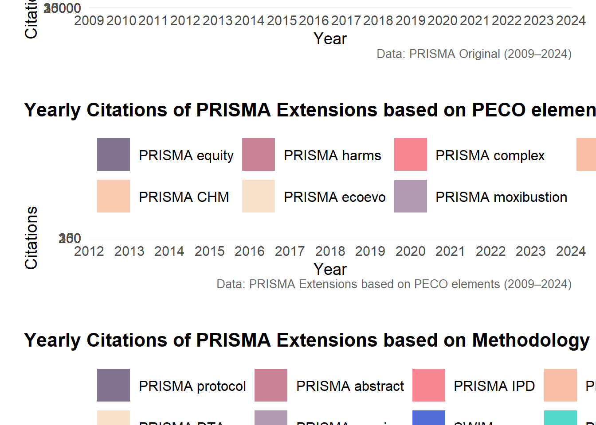

pacman::p_load(
readxl, readr, here, dplyr, tidyr, tidyverse, stringr,
ggplot2, ggpubr, patchwork, cowplot, fmsb, scales,
ggsci, paletteer, rworldmap, ggthemes, kableExtra, ggbreak,
install = TRUE
)
# Optional package (commented out as per original)
# pacman::p_load(ggradar, install = TRUE)
# Custom functions
source(here("R", "func", "func.R"))PRISMA_epidemiology
Load Packages
Load Data
# 1. Load datasets ------------------------------------------------------------
bibliometric_information <- read.csv(here("data", "PRISMA_extraction_bibliometric.csv"), skip = 0)
citations <- read.csv(here("data", "PRISMA_extraction_citations.csv"), skip = 0)
edi <- read.csv(here("data", "PRISMA_extraction_edi.csv"), skip = 0)
edi_author <- read.csv(here("data", "PRISMA_extraction_edi_author.csv"), skip = 0)
accessibility <- read.csv(here("data", "PRISMA_extraction_implementation.csv"), skip = 0)
metadata <- read.csv(here("data", "PRISMA_extraction_metadata.csv"), skip = 0)
transparency <- read.csv(here("data", "PRISMA_extraction_transparency.csv"), skip = 0)
# 2. Preview tables -----------------------------------------------------------
bibliometric_information %>%
kable("html") %>%
kable_styling("bordered", position = "left") %>%
scroll_box(width = "250%", height = "800px")| double_checked | PRISMA_id | study_id | Title | DOI | journal | year | X |
|---|---|---|---|---|---|---|---|
| KM | PRISMA_2009 | PRISMA_2009_statement_ BMJ | Preferred reporting items for systematic reviews and meta-analyses: the PRISMA statement | 10.1136/bmj.b2535 | BMJ- British Medical Journal | 2009 | |
| KM | PRISMA_2009 | PRISMA_2009_elaboration_ BMJ | The PRISMA statement for reporting systematic reviews and meta-analyses of studies that evaluate healthcare interventions: explanation and elaboration | 10.1136/bmj.b2700 | BMJ- British Medical Journal | 2009 | |
| KM | PRISMA_2009 | PRISMA_2009_statement_ Annals.of.Internal.Medicine | Preferred reporting items for systematic reviews and meta-analyses: the PRISMA statement | 10.7326/0003-4819-151-4-200908180-00135 | Annals of Internal Medicine | 2009 | |
| KM | PRISMA_2009 | PRISMA_2009_elaboration_ Annals.of.Internal.Medicine | The PRISMA statement for reporting systematic reviews and meta-analyses of studies that evaluate healthcare interventions: explanation and elaboration | 10.7326/0003-4819-151-4-200908180-00136 | Annals of Internal Medicine | 2009 | |
| KM | PRISMA_2009 | PRISMA_2009_statement_International.Journal.of.Surgery | Preferred reporting items for systematic reviews and meta-analyses: The PRISMA statement | 10.1016/j.ijsu.2010.02.007 | International Journal of Surgery | 2009 | |
| KM | PRISMA_2009 | PRISMA_2009_statement_Journal.of.Clinical.Epidemiology | Preferred Reporting Items for Systematic Reviews and Meta-Analyses: The PRISMA Statement | 10.1016/j.jclinepi.2009.06.005 | Journal of Clinical Epidemiology | 2009 | |
| KM | PRISMA_2009 | PRISMA_2009_statement_PLOS.Medicine | Preferred Reporting Items for Systematic Reviews and Meta-Analyses: The PRISMA Statement | 10.1371/journal.pmed.1000097 | PLOS Medicine | 2009 | |
| KM | PRISMA_2009 | PRISMA_2009_elaboration_PLOS.Medicine | The PRISMA Statement for Reporting Systematic Reviews and Meta-Analyses of Studies That Evaluate Health Care Interventions: Explanation and Elaboration | 10.1371/journal.pmed.1000100 | PLOS Medicine | 2009 | |
| KM | PRISMA_2020 | PRISMA_2020_statement_BMJ | The PRISMA 2020 statement: an updated guideline for reporting systematic reviews | 10.1136/bmj.n71 | BMJ- British Medical Journal | 2021 | |
| KM | PRISMA_2020 | PRISMA_2020_statement_Journal.of.Clinical.Epidemiology | The PRISMA 2020 statement: an updated guideline for reporting systematic reviews | 10.1016/j.jclinepi.2021.03.001 | Journal of Clinical Epidemiology | 2021 | |
| KM | PRISMA_2020 | PRISMA_2020_statement_Systematic.Reviews | The PRISMA 2020 statement: an updated guideline for reporting systematic reviews | 10.1371/journal.pmed.1003583 | PLOS Medicine | 2021 | |
| KM | PRISMA_2020 | PRISMA_2020_statement_PLOS.MEDICINE | The PRISMA 2020 statement: an updated guideline for reporting systematic reviews | 10.1186/s13643-021-01626-4 | Systematic Reviews | 2021 | |
| KM | PRISMA_2020 | PRISMA_2020_statement_Surgery | The PRISMA 2020 statement: an updated guideline for reporting systematic reviews | 10.1016/j.ijsu.2021.105906 | International Journal of Surgery | 2021 | |
| KM | PRISMA_2020 | PRISMA_2020_elaboration_BMJ | PRISMA 2020 explanation and elaboration: updated guidance and exemplars for reporting systematic reviews | 10.1136/bmj.n160 | BMJ- British Medical Journal | 2021 | |
| KM | PRISMA_2020 | PRISMA_2020_development_Journal.of.Clinical.Epidemiology | Updating guidance for reporting systematic reviews: development of the PRISMA 2020 statement | 10.1016/j.jclinepi.2021.02.003 | Journal of Clinical Epidemiology | 2021 | |
| KM | PRISMA_2020 | PRISMA_2020_elaboration_Pan.American.Journal.of.Public.Health | A declara<e7><e3>o PRISMA 2020: diretriz atualizada para relatar revis<f5>es sistem<e1>ticas | 10.26633/RPSP.2022.112 | Pan American Journal of Public Health | 2021 | |
| KM | PRISMA_2020 | PRISMA_2020_statement_Medicina.Fluminesis | Pravila prisma 2020. a<9e>urirane smjernice za izvje<9a>tavanje u sustavnim pregledima | 10.21860/medflum2021_264903 | Medicina Fluminesis | 2020 | |
| KM | PRISMA_2020 | PRISMA_2020_statement_Medicina.Fluminesis | French translation of the PRISMA Reporting Guidelines for writing and reading systematic reviews and meta-analyses; [Traduction fran<e7>aise des lignes directrices PRISMA pour l<92><e9>criture et la lecture des revues syst<e9>matiques et des m<e9>ta-analyses] | 10.1016/j.kine.2014.11.004 | Kin<e9>sith<e9>rapie, la Revue | 2020 | |
| KM | PRISMA_abstract | PRISMA_abstract_PLOS.Medicine | PRISMA for Abstracts: Reporting Systematic Reviews in Journal and Conference Abstracts | 10.1371/journal.pmed.1001419 | PLOS Medicine | 2013 | |
| KM | PRISMA_acupuncture | PRISMA_acupuncture_BMC.Complementary.and.Alternative.Medicine | Reporting items for systematic reviews and meta-analyses of acupuncture: the PRISMA for acupuncture checklist | 10.1186/s12906-019-2624-3 | BMC Complementary and Alternative Medicine | 2019 | |
| KM | PRISMA_CHM | PRISMA_CHM_The.American.Journal.of.Chinese.Medicine | PRISMA (Preferred Reporting Items for Systematic Reviews and Meta-Analyses) Extension for Chinese Herbal Medicines 2020 (PRISMA-CHM 2020) | 10.1142/S0192415X20500639 | The American Journal of Chinese Medicine | 2020 | |
| KM | PRISMA_CHM | PRISMA_CHM_Chinese.Journal.of.Evidence.Based.Medicine | PRISMA (Preferred Reporting Items for Systematic Reviews and Meta-Analyses) Extension for Chinese Herbal Medicines 2020 (PRISMA-CHM 2020) | 10.7507/1672-2531.202303057 | Chinese Journal of Evidence-Based Medicine | 2020 | |
| KM | PRISMA_complex | PRISMA_complex_statement_Journal.of.Clinical.Epidemiology | PRISMA-CI extension statement and checklist | 10.1016/j.jclinepi.2017.06.016 | Journal of Clinical Epidemiology | 2017 | |
| KM | PRISMA_complex | PRISMA_complex_elaboration_Journal.of.Clinical.Epidemiology | PRISMA-CI elaboration and explanation | 10.1016/j.jclinepi.2017.06.017 | Journal of Clinical Epidemiology | 2017 | |
| KM | PRISMA_COSMIN | PRISMA_COSMIN_elaboration_Quality.of.Life.Research | Guideline for reporting systematic reviews of outcome measurement instruments (OMIs): PRISMA-COSMIN for OMIs 2024 | 10.1007/s11136-024-03634-y | Quality of Life Research | 2024 | |
| KM | PRISMA_COSMIN | PRISMA_COSMIN_elaboration_Health.and.Quality.of.Life.Outcomes | Guideline for reporting systematic reviews of outcome measurement instruments (OMIs): PRISMA-COSMIN for OMIs 2024 | 10.1016/j.jclinepi.2024.111422 | Health and Quality of Life Outcomes | 2024 | |
| KM | PRISMA_COSMIN | PRISMA_COSMIN_elaboration_Journal.of.Clinical.Epidemiology | Guideline for reporting systematic reviews of outcome measurement instruments (OMIs): PRISMA-COSMIN for OMIs 2024 | 10.1186/s12955-024-02256-9 | Journal of Clinical Epidemiology | 2024 | |
| KM | PRISMA_COSMIN | PRISMA_COSMIN_elaboration_Journal.of.Patient.Reported.Outcomes | Guideline for reporting systematic reviews of outcome measurement instruments (OMIs): PRISMA-COSMIN for OMIs 2024 | 10.1186/s41687-024-00727-7 | Journal of Patient Reported Outcomes | 2024 | |
| KM | PRISMA_COSMIN | PRISMA_COSMIN_development_Research.Involvement.and.Engagement | A blueprint for patient and public involvement in the development of a reporting guideline for systematic reviews of outcome measurement instruments: PRISMA-COSMIN for OMIs 2024 | 10.1186/s40900-024-00563-5 | Research Involvement and Engagement | 2024 | |
| KM | PRISMA_DTA | PRISMA_DTA_statement_JAMA | Preferred Reporting Items for a Systematic Review and Meta-analysis of Diagnostic Test Accuracy Studies The PRISMA-DTA Statement | 10.1001/jama.2017.19163 | JAMA | 2021 | |
| KM | PRISMA_DTA | PRISMA_DTA_elaboration_BMJ | Preferred reporting items for systematic review and meta-analysis of diagnostic test accuracy studies (PRISMA-DTA): explanation, elaboration, and checklist | 10.1136/bmj.m2632 | BMJ- British Medical Journal | 2021 | |
| KM | PRISMA_DTA | PRISMA_DTA_abstract_BMJ | Preferred reporting items for journal and conference abstracts of systematic reviews and meta-analyses of diagnostic test accuracy studies (PRISMA-DTA for Abstracts): checklist, explanation, and elaboration | 10.1136/bmj.n265 | BMJ- British Medical Journal | 2021 | |
| KM | PRISMA_ecoevo | PRISMA_ecoevo_elaboration_Biological.Reviews | Preferred reporting items for systematic reviews and meta-analyses in ecology and evolutionary biology: a PRISMA extension | 10.1111/brv.12721 | Biological Reviews | 2021 | |
| KM | PRISMA_equity | PRISMA_equity_statement_PLOS.Medicine | PRISMA-Equity 2012 Extension: Reporting Guidelines for Systematic Reviews with a Focus on Health Equity | 10.1371/journal.pmed.1001333 | PLOS Medicine | 2012 | |
| KM | PRISMA_equity | PRISMA_equity_elaboration_International.Journal.for.Equity.in.Health | Extending the PRISMA statement to equity-focused systematic reviews (PRISMA-E 2012): explanation and elaboration | 10.1186/s12939-015-0219-2 | International Journal for Equity in Health | 2012 | |
| KM | PRISMA_equity | PRISMA_equity_elaboration_Journal.of.Development.Effectiveness | Extending the PRISMA statement to equity-focused systematic reviews (PRISMA-E 2012): explanation and elaboration | 10.1080/19439342.2015.1113196 | Journal of Development Effectiveness | 2012 | |
| KM | PRISMA_equity | PRISMA_equity_elaboration_Journal.of.Clinical.Epidemiology | Extending the PRISMA statement to equity-focused systematic reviews (PRISMA-E 2012): explanation and elaboration | 10.1016/j.jclinepi.2015.09.001 | Journal of Clinical Epidemiology | 2012 | |
| KM | PRISMA_harms | PRISMA_harms_statement_BMJ | PRISMA harms checklist: improving harms reporting in systematic reviews | 10.1136/bmj.i157 | BMJ- British Medical Journal | 2016 | |
| KM | PRISMA_IPD | PRISMA_IPD_statement_JAMA | Preferred Reporting Items for a Systematic Review and Meta-analysis of Individual Participant Data | 10.1001/jama.2015.3656 | JAMA | 2015 | |
| KM | PRISMA_2020_living | PRISMA_2020_elaboration_living_BMJ | Extension of the PRISMA 2020 statement for living systematic reviews (PRISMA-LSR): checklist and explanation | 10.1136/bmj-2024-079183 | BMJ- British Medical Journal | 2024 | |
| KM | PRISMA_moxibustion | PRISMA_moxibustion_Systematic.Reviews | PRISMA extension for moxibustion 2020: recommendations, explanation, and elaboration | 10.1186/s13643-020-01502-7 | Systematic Reviews | 2020 | |
| KM | PRISMA_NMA | PRISMA_NMA_Annals.of.Internal.Medicine | The PRISMA Extension Statement for Reporting of Systematic Reviews Incorporating Network Meta-analyses of Health Care Interventions: Checklist and Explanations | 10.7326/M14-2385 | Annals of Internal Medicine | 2015 | |
| KM | PRISMA_protocol | PRISMA_protocol_statement_Systematic.Reviews | Preferred reporting items for systematic review and meta-analysis protocols (PRISMA-P) 2015 statement | 10.1186/2046-4053-4-1 | Systematic Reviews | 2015 | |
| KM | PRISMA_protocol | PRISMA_protocol_elaboration_BMJ | Preferred reporting items for systematic review and meta-analysis protocols (PRISMA-P) 2015: elaboration and explanation | 10.1136/bmj.g7647 | BMJ- British Medical Journal | 2015 | |
| KM | PRISMA_scoping | PRISMA_scoping_elaboration_Annals.of.Internal.Medicine | PRISMA Extension for Scoping Reviews (PRISMA-ScR): Checklist and Explanation | 10.7326/M18-0850 | Annals of Internal Medicine | 2018 | |
| KM | PRISMA_ search | PRISMA_search_statement_Systematic.Review | PRISMA-S: an extension to the PRISMA Statement for Reporting Literature Searches in Systematic Reviews | 10.1186/s13643-020-01542-z | Systematic Reviews | 2021 | |
| KM | SWIM | SWIM_review_without_ma_BMJ | Synthesis without meta-analysis (SWiM) in systematic reviews: reporting guideline | 10.1136/bmj.l6890 | BMJ- British Medical Journal | 2020 | states in table 1 - Synthesis Without Meta-analysis (SWiM) items: SWiM is intended to complement and be used as an extension to PRISMA |
| KM | OoSRs | OoSRs_Journal.of.Clinical.Epidemiology | Preferred reporting items for overviews of systematic reviews including harms checklist: a pilot tool to be used for balanced reporting of benefits and harms | 10.1016/j.jclinepi.2017.10.002 | Journal of Clinical Epidemiology | 2018 |
citations %>%
kable("html") %>%
kable_styling("bordered", position = "left") %>%
scroll_box(width = "250%", height = "800px")| study_id | year | citations | category | duplicate | conducted.30.01.2025 | X | X.1 | X.2 |
|---|---|---|---|---|---|---|---|---|
| PRISMA_2009_statement_ BMJ | 2025 | 491 | original | no | NA | |||
| PRISMA_2009_statement_ BMJ | 2024 | 11736 | original | no | NA | |||
| PRISMA_2009_statement_ BMJ | 2023 | 13593 | original | no | NA | |||
| PRISMA_2009_statement_ BMJ | 2022 | 17671 | original | no | NA | |||
| PRISMA_2009_statement_ BMJ | 2021 | 22184 | original | no | NA | |||
| PRISMA_2009_statement_ BMJ | 2020 | 18767 | original | no | NA | |||
| PRISMA_2009_statement_ BMJ | 2019 | 13007 | original | no | NA | |||
| PRISMA_2009_statement_ BMJ | 2018 | 9154 | original | no | NA | |||
| PRISMA_2009_statement_ BMJ | 2017 | 7566 | original | no | NA | |||
| PRISMA_2009_statement_ BMJ | 2016 | 5968 | original | no | NA | |||
| PRISMA_2009_statement_ BMJ | 2015 | 4280 | original | no | NA | |||
| PRISMA_2009_statement_ BMJ | 2014 | 3010 | original | no | NA | |||
| PRISMA_2009_statement_ BMJ | 2013 | 2062 | original | no | NA | |||
| PRISMA_2009_statement_ BMJ | 2012 | 1239 | original | no | NA | |||
| PRISMA_2009_statement_ BMJ | 2011 | 675 | original | no | NA | |||
| PRISMA_2009_statement_ BMJ | 2010 | 229 | original | no | NA | |||
| PRISMA_2009_statement_ BMJ | 2009 | 19 | original | no | NA | |||
| PRISMA_2009_elaboration_ BMJ | 2025 | 491 | original | yes | NA | |||
| PRISMA_2009_elaboration_ BMJ | 2024 | 11736 | original | yes | NA | |||
| PRISMA_2009_elaboration_ BMJ | 2023 | 13593 | original | yes | NA | |||
| PRISMA_2009_elaboration_ BMJ | 2022 | 17671 | original | yes | NA | |||
| PRISMA_2009_elaboration_ BMJ | 2021 | 22184 | original | yes | NA | |||
| PRISMA_2009_elaboration_ BMJ | 2020 | 18767 | original | yes | NA | |||
| PRISMA_2009_elaboration_ BMJ | 2019 | 13007 | original | yes | NA | |||
| PRISMA_2009_elaboration_ BMJ | 2018 | 9154 | original | yes | NA | |||
| PRISMA_2009_elaboration_ BMJ | 2017 | 7566 | original | yes | NA | |||
| PRISMA_2009_elaboration_ BMJ | 2016 | 5968 | original | yes | NA | |||
| PRISMA_2009_elaboration_ BMJ | 2015 | 4280 | original | yes | NA | |||
| PRISMA_2009_elaboration_ BMJ | 2014 | 3010 | original | yes | NA | |||
| PRISMA_2009_elaboration_ BMJ | 2013 | 2062 | original | yes | NA | |||
| PRISMA_2009_elaboration_ BMJ | 2012 | 1239 | original | yes | NA | |||
| PRISMA_2009_elaboration_ BMJ | 2011 | 675 | original | yes | NA | |||
| PRISMA_2009_elaboration_ BMJ | 2010 | 229 | original | yes | NA | |||
| PRISMA_2009_elaboration_ BMJ | 2009 | 19 | original | yes | NA | |||
| PRISMA_2009_statement_ Annals.of.Internal.Medicine | 2025 | 491 | original | yes | NA | |||
| PRISMA_2009_statement_ Annals.of.Internal.Medicine | 2024 | 11736 | original | yes | NA | |||
| PRISMA_2009_statement_ Annals.of.Internal.Medicine | 2023 | 13593 | original | yes | NA | |||
| PRISMA_2009_statement_ Annals.of.Internal.Medicine | 2022 | 17671 | original | yes | NA | |||
| PRISMA_2009_statement_ Annals.of.Internal.Medicine | 2021 | 22184 | original | yes | NA | |||
| PRISMA_2009_statement_ Annals.of.Internal.Medicine | 2020 | 18767 | original | yes | NA | |||
| PRISMA_2009_statement_ Annals.of.Internal.Medicine | 2019 | 13007 | original | yes | NA | |||
| PRISMA_2009_statement_ Annals.of.Internal.Medicine | 2018 | 9154 | original | yes | NA | |||
| PRISMA_2009_statement_ Annals.of.Internal.Medicine | 2017 | 7566 | original | yes | NA | |||
| PRISMA_2009_statement_ Annals.of.Internal.Medicine | 2016 | 5968 | original | yes | NA | |||
| PRISMA_2009_statement_ Annals.of.Internal.Medicine | 2015 | 4280 | original | yes | NA | |||
| PRISMA_2009_statement_ Annals.of.Internal.Medicine | 2014 | 3010 | original | yes | NA | |||
| PRISMA_2009_statement_ Annals.of.Internal.Medicine | 2013 | 2062 | original | yes | NA | |||
| PRISMA_2009_statement_ Annals.of.Internal.Medicine | 2012 | 1239 | original | yes | NA | |||
| PRISMA_2009_statement_ Annals.of.Internal.Medicine | 2011 | 675 | original | yes | NA | |||
| PRISMA_2009_statement_ Annals.of.Internal.Medicine | 2010 | 229 | original | yes | NA | |||
| PRISMA_2009_statement_ Annals.of.Internal.Medicine | 2009 | 19 | original | yes | NA | |||
| PRISMA_2009_elaboration_ Annals.of.Internal.Medicine | 2025 | 14 | original | no | NA | |||
| PRISMA_2009_elaboration_ Annals.of.Internal.Medicine | 2024 | 99 | original | no | NA | |||
| PRISMA_2009_elaboration_ Annals.of.Internal.Medicine | 2023 | 789 | original | no | NA | |||
| PRISMA_2009_elaboration_ Annals.of.Internal.Medicine | 2022 | 343 | original | no | NA | |||
| PRISMA_2009_elaboration_ Annals.of.Internal.Medicine | 2021 | 877 | original | no | NA | |||
| PRISMA_2009_elaboration_ Annals.of.Internal.Medicine | 2020 | 1383 | original | no | NA | |||
| PRISMA_2009_elaboration_ Annals.of.Internal.Medicine | 2019 | 1543 | original | no | NA | |||
| PRISMA_2009_elaboration_ Annals.of.Internal.Medicine | 2018 | 974 | original | no | NA | |||
| PRISMA_2009_elaboration_ Annals.of.Internal.Medicine | 2017 | 853 | original | no | NA | |||
| PRISMA_2009_elaboration_ Annals.of.Internal.Medicine | 2016 | 560 | original | no | NA | |||
| PRISMA_2009_elaboration_ Annals.of.Internal.Medicine | 2015 | 475 | original | no | NA | |||
| PRISMA_2009_elaboration_ Annals.of.Internal.Medicine | 2014 | 346 | original | no | NA | |||
| PRISMA_2009_elaboration_ Annals.of.Internal.Medicine | 2013 | 312 | original | no | NA | |||
| PRISMA_2009_elaboration_ Annals.of.Internal.Medicine | 2012 | 178 | original | no | NA | |||
| PRISMA_2009_elaboration_ Annals.of.Internal.Medicine | 2011 | 114 | original | no | NA | |||
| PRISMA_2009_elaboration_ Annals.of.Internal.Medicine | 2010 | 69 | original | no | NA | |||
| PRISMA_2009_elaboration_ Annals.of.Internal.Medicine | 2009 | 12 | original | no | NA | |||
| PRISMA_2009_statement_International.Journal.of.Surgery | 2025 | 491 | original | yes | NA | |||
| PRISMA_2009_statement_International.Journal.of.Surgery | 2024 | 11736 | original | yes | NA | |||
| PRISMA_2009_statement_International.Journal.of.Surgery | 2023 | 13593 | original | yes | NA | |||
| PRISMA_2009_statement_International.Journal.of.Surgery | 2022 | 17671 | original | yes | NA | |||
| PRISMA_2009_statement_International.Journal.of.Surgery | 2021 | 22184 | original | yes | NA | |||
| PRISMA_2009_statement_International.Journal.of.Surgery | 2020 | 18767 | original | yes | NA | |||
| PRISMA_2009_statement_International.Journal.of.Surgery | 2019 | 13007 | original | yes | NA | |||
| PRISMA_2009_statement_International.Journal.of.Surgery | 2018 | 9154 | original | yes | NA | |||
| PRISMA_2009_statement_International.Journal.of.Surgery | 2017 | 7566 | original | yes | NA | |||
| PRISMA_2009_statement_International.Journal.of.Surgery | 2016 | 5968 | original | yes | NA | |||
| PRISMA_2009_statement_International.Journal.of.Surgery | 2015 | 4280 | original | yes | NA | |||
| PRISMA_2009_statement_International.Journal.of.Surgery | 2014 | 3010 | original | yes | NA | |||
| PRISMA_2009_statement_International.Journal.of.Surgery | 2013 | 2062 | original | yes | NA | |||
| PRISMA_2009_statement_International.Journal.of.Surgery | 2012 | 1239 | original | yes | NA | |||
| PRISMA_2009_statement_International.Journal.of.Surgery | 2011 | 675 | original | yes | NA | |||
| PRISMA_2009_statement_International.Journal.of.Surgery | 2010 | 229 | original | yes | NA | |||
| PRISMA_2009_statement_International.Journal.of.Surgery | 2009 | 19 | original | yes | NA | |||
| PRISMA_2009_statement_Journal.of.Clinical.Epidemiology | 2025 | 15 | original | yes | NA | |||
| PRISMA_2009_statement_Journal.of.Clinical.Epidemiology | 2024 | 836 | original | no | NA | |||
| PRISMA_2009_statement_Journal.of.Clinical.Epidemiology | 2023 | 1329 | original | no | NA | |||
| PRISMA_2009_statement_Journal.of.Clinical.Epidemiology | 2022 | 2191 | original | no | NA | |||
| PRISMA_2009_statement_Journal.of.Clinical.Epidemiology | 2021 | 815 | original | no | NA | |||
| PRISMA_2009_statement_Journal.of.Clinical.Epidemiology | 2020 | 395 | original | no | NA | |||
| PRISMA_2009_statement_Journal.of.Clinical.Epidemiology | 2019 | 1092 | original | no | NA | |||
| PRISMA_2009_statement_Journal.of.Clinical.Epidemiology | 2018 | 1066 | original | no | NA | |||
| PRISMA_2009_statement_Journal.of.Clinical.Epidemiology | 2017 | 724 | original | no | NA | |||
| PRISMA_2009_statement_Journal.of.Clinical.Epidemiology | 2016 | 628 | original | no | NA | |||
| PRISMA_2009_statement_Journal.of.Clinical.Epidemiology | 2015 | 514 | original | no | NA | |||
| PRISMA_2009_statement_Journal.of.Clinical.Epidemiology | 2014 | 369 | original | no | NA | |||
| PRISMA_2009_statement_Journal.of.Clinical.Epidemiology | 2013 | 223 | original | no | NA | |||
| PRISMA_2009_statement_Journal.of.Clinical.Epidemiology | 2012 | 149 | original | no | NA | |||
| PRISMA_2009_statement_Journal.of.Clinical.Epidemiology | 2011 | 75 | original | no | NA | |||
| PRISMA_2009_statement_Journal.of.Clinical.Epidemiology | 2010 | 37 | original | no | NA | |||
| PRISMA_2009_statement_PLOS.Medicine | 2025 | 491 | original | yes | NA | |||
| PRISMA_2009_statement_PLOS.Medicine | 2024 | 11736 | original | yes | NA | |||
| PRISMA_2009_statement_PLOS.Medicine | 2023 | 13593 | original | yes | NA | |||
| PRISMA_2009_statement_PLOS.Medicine | 2022 | 17671 | original | yes | NA | |||
| PRISMA_2009_statement_PLOS.Medicine | 2021 | 22184 | original | yes | NA | |||
| PRISMA_2009_statement_PLOS.Medicine | 2020 | 18767 | original | yes | NA | |||
| PRISMA_2009_statement_PLOS.Medicine | 2019 | 13007 | original | yes | NA | |||
| PRISMA_2009_statement_PLOS.Medicine | 2018 | 9154 | original | yes | NA | |||
| PRISMA_2009_statement_PLOS.Medicine | 2017 | 7566 | original | yes | NA | |||
| PRISMA_2009_statement_PLOS.Medicine | 2016 | 5968 | original | yes | NA | |||
| PRISMA_2009_statement_PLOS.Medicine | 2015 | 4280 | original | yes | NA | |||
| PRISMA_2009_statement_PLOS.Medicine | 2014 | 3010 | original | yes | NA | |||
| PRISMA_2009_statement_PLOS.Medicine | 2013 | 2062 | original | yes | NA | |||
| PRISMA_2009_statement_PLOS.Medicine | 2012 | 1239 | original | yes | NA | |||
| PRISMA_2009_statement_PLOS.Medicine | 2011 | 675 | original | yes | NA | |||
| PRISMA_2009_statement_PLOS.Medicine | 2010 | 229 | original | yes | NA | |||
| PRISMA_2009_statement_PLOS.Medicine | 2009 | 19 | original | yes | NA | |||
| PRISMA_2009_elaboration_PLOS.Medicine | 2025 | 7 | original | no | NA | |||
| PRISMA_2009_elaboration_PLOS.Medicine | 2024 | 81 | original | no | NA | |||
| PRISMA_2009_elaboration_PLOS.Medicine | 2023 | 801 | original | no | NA | |||
| PRISMA_2009_elaboration_PLOS.Medicine | 2022 | 361 | original | no | NA | |||
| PRISMA_2009_elaboration_PLOS.Medicine | 2021 | 900 | original | no | NA | |||
| PRISMA_2009_elaboration_PLOS.Medicine | 2020 | 1418 | original | no | NA | |||
| PRISMA_2009_elaboration_PLOS.Medicine | 2019 | 1564 | original | no | NA | |||
| PRISMA_2009_elaboration_PLOS.Medicine | 2018 | 1011 | original | no | NA | |||
| PRISMA_2009_elaboration_PLOS.Medicine | 2017 | 880 | original | no | NA | |||
| PRISMA_2009_elaboration_PLOS.Medicine | 2016 | 583 | original | no | NA | |||
| PRISMA_2009_elaboration_PLOS.Medicine | 2015 | 493 | original | no | NA | |||
| PRISMA_2009_elaboration_PLOS.Medicine | 2014 | 360 | original | no | NA | |||
| PRISMA_2009_elaboration_PLOS.Medicine | 2013 | 319 | original | no | NA | |||
| PRISMA_2009_elaboration_PLOS.Medicine | 2012 | 180 | original | no | NA | |||
| PRISMA_2009_elaboration_PLOS.Medicine | 2011 | 120 | original | no | NA | |||
| PRISMA_2009_elaboration_PLOS.Medicine | 2010 | 72 | original | no | NA | |||
| PRISMA_2009_elaboration_PLOS.Medicine | 2009 | 10 | original | no | NA | |||
| PRISMA_2020_statement_BMJ | 2025 | 267 | original | no | NA | |||
| PRISMA_2020_statement_BMJ | 2024 | 19341 | original | no | NA | |||
| PRISMA_2020_statement_BMJ | 2023 | 13894 | original | no | NA | |||
| PRISMA_2020_statement_BMJ | 2022 | 9108 | original | no | NA | |||
| PRISMA_2020_statement_BMJ | 2021 | 1661 | original | no | NA | |||
| PRISMA_2020_statement_BMJ | 2020 | 2 | original | no | NA | |||
| PRISMA_2020_statement_Journal.of.Clinical.Epidemiology | 2025 | 15 | original | no | NA | |||
| PRISMA_2020_statement_Journal.of.Clinical.Epidemiology | 2024 | 255 | original | no | NA | |||
| PRISMA_2020_statement_Journal.of.Clinical.Epidemiology | 2023 | 580 | original | no | NA | |||
| PRISMA_2020_statement_Journal.of.Clinical.Epidemiology | 2022 | 450 | original | no | NA | |||
| PRISMA_2020_statement_Journal.of.Clinical.Epidemiology | 2021 | 111 | original | no | NA | |||
| PRISMA_2020_statement_PLOS.MEDICINE | 2025 | 33 | original | no | NA | |||
| PRISMA_2020_statement_PLOS.MEDICINE | 2024 | 372 | original | no | NA | |||
| PRISMA_2020_statement_PLOS.MEDICINE | 2023 | 466 | original | no | NA | |||
| PRISMA_2020_statement_PLOS.MEDICINE | 2022 | 436 | original | no | NA | |||
| PRISMA_2020_statement_PLOS.MEDICINE | 2021 | 95 | original | no | NA | |||
| PRISMA_2020_statement_PLOS.MEDICINE | 2020 | 1 | original | no | NA | |||
| PRISMA_2020_statement_Surgery | 2025 | 90 | original | no | NA | |||
| PRISMA_2020_statement_Surgery | 2024 | 858 | original | no | NA | |||
| PRISMA_2020_statement_Surgery | 2023 | 1854 | original | no | NA | |||
| PRISMA_2020_statement_Surgery | 2022 | 654 | original | no | NA | |||
| PRISMA_2020_statement_Surgery | 2021 | 85 | original | no | NA | |||
| PRISMA_2020_statement_Surgery | 2020 | 1 | original | no | NA | |||
| PRISMA_2020_elaboration_BMJ | 2025 | 81 | original | no | NA | |||
| PRISMA_2020_elaboration_BMJ | 2024 | 901 | original | no | NA | |||
| PRISMA_2020_elaboration_BMJ | 2023 | 886 | original | no | NA | |||
| PRISMA_2020_elaboration_BMJ | 2022 | 642 | original | no | NA | |||
| PRISMA_2020_elaboration_BMJ | 2021 | 107 | original | no | NA | |||
| PRISMA_2020_development_Journal.of.Clinical.Epidemiology | 2025 | 26 | original | no | NA | |||
| PRISMA_2020_development_Journal.of.Clinical.Epidemiology | 2024 | 194 | original | no | NA | |||
| PRISMA_2020_development_Journal.of.Clinical.Epidemiology | 2023 | 6 | original | no | NA | |||
| PRISMA_2020_development_Journal.of.Clinical.Epidemiology | 2022 | 2 | original | no | NA | |||
| PRISMA_2020_development_Journal.of.Clinical.Epidemiology | 2021 | 5 | original | no | NA | |||
| PRISMA_2020_elaboration_Pan.American.Journal.of.Public.Health | 2025 | 1 | original | no | NA | |||
| PRISMA_2020_elaboration_Pan.American.Journal.of.Public.Health | 2024 | 61 | original | no | NA | |||
| PRISMA_2020_elaboration_Pan.American.Journal.of.Public.Health | 2023 | 22 | original | no | NA | |||
| PRISMA_abstract_PLOS.Medicine | 2025 | 1 | methodological | no | NA | |||
| PRISMA_abstract_PLOS.Medicine | 2024 | 54 | methodological | no | NA | |||
| PRISMA_abstract_PLOS.Medicine | 2023 | 57 | methodological | no | NA | |||
| PRISMA_abstract_PLOS.Medicine | 2022 | 50 | methodological | no | NA | |||
| PRISMA_abstract_PLOS.Medicine | 2021 | 81 | methodological | no | NA | |||
| PRISMA_abstract_PLOS.Medicine | 2020 | 60 | methodological | no | NA | |||
| PRISMA_abstract_PLOS.Medicine | 2019 | 43 | methodological | no | NA | |||
| PRISMA_abstract_PLOS.Medicine | 2018 | 30 | methodological | no | NA | |||
| PRISMA_abstract_PLOS.Medicine | 2017 | 28 | methodological | no | NA | |||
| PRISMA_abstract_PLOS.Medicine | 2016 | 30 | methodological | no | NA | |||
| PRISMA_abstract_PLOS.Medicine | 2015 | 16 | methodological | no | NA | |||
| PRISMA_abstract_PLOS.Medicine | 2014 | 14 | methodological | no | NA | |||
| PRISMA_abstract_PLOS.Medicine | 2013 | 3 | methodological | no | NA | |||
| PRISMA_acupuncture_BMC.Complementary.and.Alternative.Medicine | 2024 | 19 | PICO | no | NA | |||
| PRISMA_acupuncture_BMC.Complementary.and.Alternative.Medicine | 2023 | 13 | PICO | no | NA | |||
| PRISMA_acupuncture_BMC.Complementary.and.Alternative.Medicine | 2022 | 10 | PICO | no | NA | |||
| PRISMA_acupuncture_BMC.Complementary.and.Alternative.Medicine | 2021 | 10 | PICO | no | NA | |||
| PRISMA_acupuncture_BMC.Complementary.and.Alternative.Medicine | 2020 | 4 | PICO | no | NA | |||
| PRISMA_acupuncture_BMC.Complementary.and.Alternative.Medicine | 2019 | 1 | PICO | no | NA | |||
| PRISMA_CHM_The.American.Journal.of.Chinese.Medicine | 2024 | 13 | PICO | no | NA | |||
| PRISMA_CHM_The.American.Journal.of.Chinese.Medicine | 2023 | 18 | PICO | no | NA | |||
| PRISMA_CHM_The.American.Journal.of.Chinese.Medicine | 2022 | 19 | PICO | no | NA | |||
| PRISMA_CHM_The.American.Journal.of.Chinese.Medicine | 2021 | 11 | PICO | no | NA | |||
| PRISMA_CHM_The.American.Journal.of.Chinese.Medicine | 2020 | 2 | PICO | no | NA | |||
| PRISMA_complex_statement_Journal.of.Clinical.Epidemiology | 2024 | 7 | PICO | no | NA | |||
| PRISMA_complex_statement_Journal.of.Clinical.Epidemiology | 2023 | 5 | PICO | no | NA | |||
| PRISMA_complex_statement_Journal.of.Clinical.Epidemiology | 2022 | 10 | PICO | no | NA | |||
| PRISMA_complex_statement_Journal.of.Clinical.Epidemiology | 2021 | 15 | PICO | no | NA | |||
| PRISMA_complex_statement_Journal.of.Clinical.Epidemiology | 2020 | 10 | PICO | no | NA | |||
| PRISMA_complex_statement_Journal.of.Clinical.Epidemiology | 2019 | 5 | PICO | no | NA | |||
| PRISMA_complex_statement_Journal.of.Clinical.Epidemiology | 2018 | 3 | PICO | no | NA | |||
| PRISMA_complex_statement_Journal.of.Clinical.Epidemiology | 2017 | 4 | PICO | no | NA | |||
| PRISMA_complex_elaboration_Journal.of.Clinical.Epidemiology | 2024 | 3 | PICO | no | NA | |||
| PRISMA_complex_elaboration_Journal.of.Clinical.Epidemiology | 2023 | 5 | PICO | no | NA | |||
| PRISMA_complex_elaboration_Journal.of.Clinical.Epidemiology | 2022 | 6 | PICO | no | NA | |||
| PRISMA_complex_elaboration_Journal.of.Clinical.Epidemiology | 2021 | 4 | PICO | no | NA | |||
| PRISMA_complex_elaboration_Journal.of.Clinical.Epidemiology | 2020 | 6 | PICO | no | NA | |||
| PRISMA_complex_elaboration_Journal.of.Clinical.Epidemiology | 2019 | 1 | PICO | no | NA | |||
| PRISMA_complex_elaboration_Journal.of.Clinical.Epidemiology | 2018 | 3 | PICO | no | NA | |||
| PRISMA_complex_elaboration_Journal.of.Clinical.Epidemiology | 2017 | 4 | PICO | no | NA | |||
| PRISMA_COSMIN_elaboration_Quality.of.Life.Research | 2024 | 5 | PICO | no | NA | |||
| PRISMA_COSMIN_elaboration_Health.and.Quality.of.Life.Outcomes | 2025 | 2 | PICO | no | NA | |||
| PRISMA_COSMIN_elaboration_Health.and.Quality.of.Life.Outcomes | 2024 | 1 | PICO | no | NA | |||
| PRISMA_COSMIN_elaboration_Journal.of.Clinical.Epidemiology | 2025 | 2 | PICO | no | NA | |||
| PRISMA_COSMIN_elaboration_Journal.of.Clinical.Epidemiology | 2024 | 1 | PICO | no | PRISMA_COSMIN_development_Research.Involvement.and.Engagement | 10.1186/s40900-024-00563-5 | NA | need to find |
| PRISMA_COSMIN_elaboration_Journal.of.Patient.Reported.Outcomes | 2024 | 1 | PICO | no | NA | |||
| PRISMA_DTA_statement_JAMA | 2025 | 23 | methodological | no | NA | |||
| PRISMA_DTA_statement_JAMA | 2024 | 355 | methodological | no | NA | |||
| PRISMA_DTA_statement_JAMA | 2023 | 352 | methodological | no | NA | |||
| PRISMA_DTA_statement_JAMA | 2022 | 366 | methodological | no | NA | |||
| PRISMA_DTA_statement_JAMA | 2021 | 369 | methodological | no | NA | |||
| PRISMA_DTA_statement_JAMA | 2020 | 264 | methodological | no | NA | |||
| PRISMA_DTA_statement_JAMA | 2019 | 156 | methodological | no | NA | |||
| PRISMA_DTA_statement_JAMA | 2018 | 25 | methodological | no | NA | |||
| PRISMA_DTA_elaboration_BMJ | 2025 | 10 | methodological | no | NA | |||
| PRISMA_DTA_elaboration_BMJ | 2024 | 108 | methodological | no | NA | |||
| PRISMA_DTA_elaboration_BMJ | 2023 | 118 | methodological | no | NA | |||
| PRISMA_DTA_elaboration_BMJ | 2022 | 83 | methodological | no | NA | |||
| PRISMA_DTA_elaboration_BMJ | 2021 | 34 | methodological | no | NA | |||
| PRISMA_DTA_abstract_BMJ | 2025 | 4 | methodological | no | NA | |||
| PRISMA_DTA_abstract_BMJ | 2024 | 11 | methodological | no | NA | |||
| PRISMA_DTA_abstract_BMJ | 2023 | 14 | methodological | no | NA | |||
| PRISMA_DTA_abstract_BMJ | 2022 | 10 | methodological | no | NA | |||
| PRISMA_ecoevo_elaboration_Biological.Reviews | 2025 | 4 | PICO | no | NA | |||
| PRISMA_ecoevo_elaboration_Biological.Reviews | 2024 | 102 | PICO | no | NA | |||
| PRISMA_ecoevo_elaboration_Biological.Reviews | 2023 | 86 | PICO | no | NA | |||
| PRISMA_ecoevo_elaboration_Biological.Reviews | 2022 | 57 | PICO | no | NA | |||
| PRISMA_ecoevo_elaboration_Biological.Reviews | 2021 | 4 | PICO | no | NA | |||
| PRISMA_equity_statement_PLOS.Medicine | 2025 | 2 | PICO | no | NA | |||
| PRISMA_equity_statement_PLOS.Medicine | 2024 | 31 | PICO | no | NA | |||
| PRISMA_equity_statement_PLOS.Medicine | 2023 | 47 | PICO | no | NA | |||
| PRISMA_equity_statement_PLOS.Medicine | 2022 | 60 | PICO | no | NA | |||
| PRISMA_equity_statement_PLOS.Medicine | 2021 | 45 | PICO | no | NA | |||
| PRISMA_equity_statement_PLOS.Medicine | 2020 | 43 | PICO | no | NA | |||
| PRISMA_equity_statement_PLOS.Medicine | 2019 | 37 | PICO | no | NA | |||
| PRISMA_equity_statement_PLOS.Medicine | 2018 | 26 | PICO | no | NA | |||
| PRISMA_equity_statement_PLOS.Medicine | 2017 | 35 | PICO | no | NA | |||
| PRISMA_equity_statement_PLOS.Medicine | 2016 | 33 | PICO | no | NA | |||
| PRISMA_equity_statement_PLOS.Medicine | 2015 | 36 | PICO | no | NA | |||
| PRISMA_equity_statement_PLOS.Medicine | 2014 | 23 | PICO | no | NA | |||
| PRISMA_equity_statement_PLOS.Medicine | 2013 | 17 | PICO | no | NA | |||
| PRISMA_equity_statement_PLOS.Medicine | 2012 | 1 | PICO | no | NA | |||
| PRISMA_equity_elaboration_International.Journal.for.Equity.in.Health | 2024 | 1 | PICO | no | NA | |||
| PRISMA_equity_elaboration_International.Journal.for.Equity.in.Health | 2023 | 2 | PICO | no | NA | |||
| PRISMA_equity_elaboration_International.Journal.for.Equity.in.Health | 2021 | 1 | PICO | no | NA | |||
| PRISMA_equity_elaboration_International.Journal.for.Equity.in.Health | 2020 | 2 | PICO | no | NA | |||
| PRISMA_equity_elaboration_International.Journal.for.Equity.in.Health | 2019 | 1 | PICO | no | NA | |||
| PRISMA_equity_elaboration_International.Journal.for.Equity.in.Health | 2018 | 2 | PICO | no | NA | |||
| PRISMA_equity_elaboration_Journal.of.Development.Effectiveness | 2025 | 1 | PICO | no | NA | |||
| PRISMA_equity_elaboration_Journal.of.Development.Effectiveness | 2024 | 14 | PICO | no | NA | |||
| PRISMA_equity_elaboration_Journal.of.Development.Effectiveness | 2023 | 29 | PICO | no | NA | |||
| PRISMA_equity_elaboration_Journal.of.Development.Effectiveness | 2022 | 33 | PICO | no | NA | |||
| PRISMA_equity_elaboration_Journal.of.Development.Effectiveness | 2021 | 23 | PICO | no | NA | |||
| PRISMA_equity_elaboration_Journal.of.Development.Effectiveness | 2020 | 18 | PICO | no | NA | |||
| PRISMA_equity_elaboration_Journal.of.Development.Effectiveness | 2019 | 18 | PICO | no | NA | |||
| PRISMA_equity_elaboration_Journal.of.Development.Effectiveness | 2018 | 8 | PICO | no | NA | |||
| PRISMA_equity_elaboration_Journal.of.Development.Effectiveness | 2017 | 5 | PICO | no | NA | |||
| PRISMA_equity_elaboration_Journal.of.Development.Effectiveness | 2016 | 3 | PICO | no | NA | |||
| PRISMA_equity_elaboration_Journal.of.Clinical.Epidemiology | 2024 | 10 | PICO | no | NA | |||
| PRISMA_equity_elaboration_Journal.of.Clinical.Epidemiology | 2023 | 6 | PICO | no | NA | |||
| PRISMA_equity_elaboration_Journal.of.Clinical.Epidemiology | 2022 | 9 | PICO | no | NA | |||
| PRISMA_equity_elaboration_Journal.of.Clinical.Epidemiology | 2021 | 13 | PICO | no | NA | |||
| PRISMA_equity_elaboration_Journal.of.Clinical.Epidemiology | 2020 | 11 | PICO | no | NA | |||
| PRISMA_equity_elaboration_Journal.of.Clinical.Epidemiology | 2019 | 18 | PICO | no | NA | |||
| PRISMA_equity_elaboration_Journal.of.Clinical.Epidemiology | 2018 | 12 | PICO | no | NA | |||
| PRISMA_equity_elaboration_Journal.of.Clinical.Epidemiology | 2017 | 7 | PICO | no | NA | |||
| PRISMA_equity_elaboration_Journal.of.Clinical.Epidemiology | 2016 | 4 | PICO | no | NA | |||
| PRISMA_harms_statement_BMJ | 2024 | 37 | PICO | no | NA | |||
| PRISMA_harms_statement_BMJ | 2023 | 49 | PICO | no | NA | |||
| PRISMA_harms_statement_BMJ | 2022 | 49 | PICO | no | NA | |||
| PRISMA_harms_statement_BMJ | 2021 | 70 | PICO | no | NA | |||
| PRISMA_harms_statement_BMJ | 2020 | 47 | PICO | no | NA | |||
| PRISMA_harms_statement_BMJ | 2019 | 39 | PICO | no | NA | |||
| PRISMA_harms_statement_BMJ | 2018 | 24 | PICO | no | NA | |||
| PRISMA_harms_statement_BMJ | 2017 | 23 | PICO | no | NA | |||
| PRISMA_harms_statement_BMJ | 2016 | 6 | PICO | no | NA | |||
| PRISMA_IPD_statement_JAMA | 2025 | 12 | methodological | no | NA | |||
| PRISMA_IPD_statement_JAMA | 2024 | 185 | methodological | no | NA | |||
| PRISMA_IPD_statement_JAMA | 2023 | 212 | methodological | no | NA | |||
| PRISMA_IPD_statement_JAMA | 2022 | 234 | methodological | no | NA | |||
| PRISMA_IPD_statement_JAMA | 2021 | 209 | methodological | no | NA | |||
| PRISMA_IPD_statement_JAMA | 2020 | 179 | methodological | no | NA | |||
| PRISMA_IPD_statement_JAMA | 2019 | 161 | methodological | no | NA | |||
| PRISMA_IPD_statement_JAMA | 2018 | 124 | methodological | no | NA | |||
| PRISMA_IPD_statement_JAMA | 2017 | 87 | methodological | no | NA | |||
| PRISMA_IPD_statement_JAMA | 2016 | 47 | methodological | no | NA | |||
| PRISMA_IPD_statement_JAMA | 2015 | 12 | methodological | no | NA | |||
| PRISMA_moxibustion_Systematic.Reviews | 2024 | 1 | PICO | no | NA | |||
| PRISMA_moxibustion_Systematic.Reviews | 2023 | 2 | PICO | no | NA | |||
| PRISMA_moxibustion_Systematic.Reviews | 2022 | 4 | PICO | no | NA | |||
| PRISMA_moxibustion_Systematic.Reviews | 2021 | 1 | PICO | no | NA | |||
| PRISMA_NMA_Annals.of.Internal.Medicine | 2025 | 71 | methodological | no | NA | |||
| PRISMA_NMA_Annals.of.Internal.Medicine | 2024 | 873 | methodological | no | NA | |||
| PRISMA_NMA_Annals.of.Internal.Medicine | 2023 | 805 | methodological | no | NA | |||
| PRISMA_NMA_Annals.of.Internal.Medicine | 2022 | 855 | methodological | no | NA | |||
| PRISMA_NMA_Annals.of.Internal.Medicine | 2021 | 778 | methodological | no | NA | |||
| PRISMA_NMA_Annals.of.Internal.Medicine | 2020 | 531 | methodological | no | NA | |||
| PRISMA_NMA_Annals.of.Internal.Medicine | 2019 | 383 | methodological | no | NA | |||
| PRISMA_NMA_Annals.of.Internal.Medicine | 2018 | 285 | methodological | no | NA | |||
| PRISMA_NMA_Annals.of.Internal.Medicine | 2017 | 175 | methodological | no | NA | |||
| PRISMA_NMA_Annals.of.Internal.Medicine | 2016 | 100 | methodological | no | NA | |||
| PRISMA_NMA_Annals.of.Internal.Medicine | 2015 | 15 | methodological | no | NA | |||
| PRISMA_protocol_statement_Systematic.Reviews | 2025 | 679 | methodological | no | NA | |||
| PRISMA_protocol_statement_Systematic.Reviews | 2024 | 12260 | methodological | no | NA | |||
| PRISMA_protocol_statement_Systematic.Reviews | 2023 | 14298 | methodological | no | NA | |||
| PRISMA_protocol_statement_Systematic.Reviews | 2022 | 18486 | methodological | no | NA | |||
| PRISMA_protocol_statement_Systematic.Reviews | 2021 | 20677 | methodological | no | NA | |||
| PRISMA_protocol_statement_Systematic.Reviews | 2020 | 17159 | methodological | no | NA | |||
| PRISMA_protocol_statement_Systematic.Reviews | 2019 | 11962 | methodological | no | NA | |||
| PRISMA_protocol_statement_Systematic.Reviews | 2018 | 9151 | methodological | no | NA | |||
| PRISMA_protocol_statement_Systematic.Reviews | 2017 | 7559 | methodological | no | NA | |||
| PRISMA_protocol_statement_Systematic.Reviews | 2016 | 5967 | methodological | no | NA | |||
| PRISMA_protocol_statement_Systematic.Reviews | 2015 | 4280 | methodological | no | NA | |||
| PRISMA_protocol_statement_Systematic.Reviews | 2014 | 3010 | methodological | no | NA | |||
| PRISMA_protocol_statement_Systematic.Reviews | 2013 | 2062 | methodological | no | NA | |||
| PRISMA_protocol_statement_Systematic.Reviews | 2012 | 1239 | methodological | no | NA | |||
| PRISMA_protocol_statement_Systematic.Reviews | 2011 | 675 | methodological | no | NA | |||
| PRISMA_protocol_statement_Systematic.Reviews | 2010 | 229 | methodological | no | NA | |||
| PRISMA_protocol_statement_Systematic.Reviews | 2009 | 19 | methodological | no | NA | |||
| PRISMA_protocol_elaboration_BMJ | 2025 | 34 | methodological | no | NA | |||
| PRISMA_protocol_elaboration_BMJ | 2024 | 671 | methodological | no | NA | |||
| PRISMA_protocol_elaboration_BMJ | 2023 | 296 | methodological | no | NA | |||
| PRISMA_protocol_elaboration_BMJ | 2022 | 584 | methodological | no | NA | |||
| PRISMA_protocol_elaboration_BMJ | 2021 | 625 | methodological | no | NA | |||
| PRISMA_protocol_elaboration_BMJ | 2020 | 78 | methodological | no | NA | |||
| PRISMA_protocol_elaboration_BMJ | 2019 | 15 | methodological | no | NA | |||
| PRISMA_protocol_elaboration_BMJ | 2018 | 6 | methodological | no | NA | |||
| PRISMA_protocol_elaboration_BMJ | 2017 | 3 | methodological | no | NA | |||
| PRISMA_protocol_elaboration_BMJ | 2015 | 1 | methodological | no | NA | |||
| PRISMA_scoping_elaboration_Annals.of.Internal.Medicine | 2025 | 414 | methodological | no | NA | |||
| PRISMA_scoping_elaboration_Annals.of.Internal.Medicine | 2024 | 5231 | methodological | no | NA | |||
| PRISMA_scoping_elaboration_Annals.of.Internal.Medicine | 2023 | 4164 | methodological | no | NA | |||
| PRISMA_scoping_elaboration_Annals.of.Internal.Medicine | 2022 | 3423 | methodological | no | NA | |||
| PRISMA_scoping_elaboration_Annals.of.Internal.Medicine | 2021 | 2104 | methodological | no | NA | |||
| PRISMA_scoping_elaboration_Annals.of.Internal.Medicine | 2020 | 1019 | methodological | no | NA | |||
| PRISMA_scoping_elaboration_Annals.of.Internal.Medicine | 2019 | 314 | methodological | no | NA | |||
| PRISMA_scoping_elaboration_Annals.of.Internal.Medicine | 2018 | 6 | methodological | no | NA | |||
| PRISMA_search_statement_Systematic.Review | 2025 | 30 | methodological | no | NA | |||
| PRISMA_search_statement_Systematic.Review | 2024 | 450 | methodological | no | NA | |||
| PRISMA_search_statement_Systematic.Review | 2023 | 373 | methodological | no | NA | |||
| PRISMA_search_statement_Systematic.Review | 2022 | 281 | methodological | no | NA | |||
| PRISMA_search_statement_Systematic.Review | 2021 | 74 | methodological | no | NA | |||
| SWIM_review_without_ma_BMJ | 2025 | 40 | methodological | no | NA | |||
| SWIM_review_without_ma_BMJ | 2024 | 515 | methodological | no | NA | |||
| SWIM_review_without_ma_BMJ | 2023 | 488 | methodological | no | NA | |||
| SWIM_review_without_ma_BMJ | 2022 | 396 | methodological | no | NA | |||
| SWIM_review_without_ma_BMJ | 2021 | 238 | methodological | no | NA | |||
| SWIM_review_without_ma_BMJ | 2020 | 58 | methodological | no | NA | |||
| OoSRs_Journal.of.Clinical.Epidemiology | 2024 | 27 | methodological | no | NA | |||
| OoSRs_Journal.of.Clinical.Epidemiology | 2023 | 39 | methodological | no | NA | |||
| OoSRs_Journal.of.Clinical.Epidemiology | 2022 | 44 | methodological | no | NA | |||
| OoSRs_Journal.of.Clinical.Epidemiology | 2021 | 25 | methodological | no | NA | |||
| OoSRs_Journal.of.Clinical.Epidemiology | 2020 | 22 | methodological | no | NA | |||
| OoSRs_Journal.of.Clinical.Epidemiology | 2019 | 14 | methodological | no | NA | |||
| OoSRs_Journal.of.Clinical.Epidemiology | 2018 | 2 | methodological | no | NA |
edi %>%
kable("html") %>%
kable_styling("bordered", position = "left") %>%
scroll_box(width = "250%", height = "800px")| PRISMA_id | total_authors | edi_considered | edi_considered_comment | lingual_diversity | stakeholder_engagement | stakeholder_engagement_comment | open_access |
|---|---|---|---|---|---|---|---|
| PRISMA_2009 | NA | no | NA | 8 | yes | A three-day meeting was held in Ottawa, Canada, in June 2005 with 29 participants, including review authors, methodologists, clinicians, medical editors, and a consumer. | yes |
| PRISMA_2020 | NA | no | NA | 14 | yes | Involving contributors with expertise in different areas ensures that the guideline reflects the latest guidance on various aspects of systematic review methodology. Involving contributors with: experience producing systematic reviews with or for key end users (eg, patients, health care providers, policy makers, regulators); developing clinical practice guidelines; working in clinical practice; serving on advisory committees for various stakeholders; working for developers of software for systematic reviewers; and consulting with policy makers means that the perspectives of end users are considered to some extent | yes |
| PRISMA_abstract | NA | no | NA | 1 | no | NA | yes |
| PRISMA_acupuncture | NA | no | NA | 2 | yes | NA | yes |
| PRISMA_CHM | NA | no | NA | 1 | yes | NA | yes |
| PRISMA_complex | NA | no | NA | 1 | yes | A six-person steering committee (Appendix B at www.jclinepi.com) comprising representatives from international evidence review groups, methodologists, and funders or publishers of systematic reviews planned an in-person conference to develop guidance and tools for complex intervention systematic review [21]. | no |
| PRISMA_COSMIN | NA | no | NA | 1 | yes | Table 1 | no |
| PRISMA_DTA | NA | no | NA | 1 | yes | etable1 | yes |
| PRISMA_DTA_abstract | NA | no | NA | 1 | yes | etable2 | yes |
| PRISMA_ecoevo | NA | no | NA | 1 | no | NA | yes |
| PRISMA_equity | NA | yes | The participants included journal editors (n?=?3), funders (n?=?2), systematic review authors with a focus on low- and middle-income countries (n?=?4), decision-making organizations (n?=?2), practitioners in public health or health care (n?=?5), and methodologists/statisticians (n?=?4). Several participants represented more than one of these groups, but are only counted once. There were seven participants from low- and middle-income countries. | 1 | yes | NA | yes |
| PRISMA_harms | NA | no | I think no: An in-person two day consensus meeting was held in Banff, Canada, in May 2012. It included 25 experts from seven countries with extensive experience in systematic reviews, adverse events research, and guideline development, and also included a consumer and a member of a health regulatory agency (Health Canada). | 1 | yes | Delphi participants were selected on the basis of their expertise in systematic reviews in general, and in particular reviews of adverse events. This selection was complemented by other content experts including methodologists, statisticians, epidemiologists, clinicians, journal editors, a consumer, and a member of a federal health regulatory agency (Health Canada). | yes |
| PRISMA_IPD | NA | no | No EDI mention - The 26 participants included systematic reviewers with experience in IPD synthesis (n?=?21), clinicians (n?=?6), methodologists (n?=?20), and journal editors (n?=?10). Survey feedback was presented, and each PRISMA item was discussed in detail and agreement on inclusion and wording reached by consensus. | 1 | yes | Mentioned in survey response | no |
| PRISMA_2020_living | NA | no | No EDI mention | 1 | yes | The executive committee nominated people representing different stakeholder groups (eg, systematic reviewers, guideline developers, editors, publishers) to form an international expert panel (PRISMA-LSR Group; see appendix 1). | yes |
| PRISMA_moxibustion | NA | no | NA | 1 | yes | A total of eleven professionals, including five senior TCM practitioners, three evidence-based medicine and clinical trial methodology experts, two reporting guideline developers, and one epidemiologist, were invited to attend a face-to-face meeting in Lanzhou, China, on 19 July 2017. | yes |
| PRISMA_NMA | NA | no | NA | 2 | yes | We followed an established approach for this work (11). We formed a steering committee (consisting of Drs. Hutton, Salanti, Moher, Caldwell, Chaimani, Schmid, Thorlund, and Altman); garnered input from 17 journal editors, reporting guideline authors, and researchers with extensive experience in systematic reviews and network meta-analysis; and performed an overview of existing reviews of the reporting quality of network meta-analyses to identify candidate elements important to report in network meta-analyses (10). | no |
| PRISMA_protocol | NA | no | NA | 1 | yes | Delegates included journal editors, systematic review methodologists (including directors and representatives from international Cochrane Centres, Agency for Healthcare Research and Quality<92>s (AHRQ<92>s) Evidence-based Practice Centres, and the UK National Institute for Health Research), reporting guideline developers, information specialists, biostatisticians, and health research funders. Through group discussion at the meeting, 38 potential checklist items were reduced to 22. | yes |
| PRISMA_scoping | NA | yes | We aimed to form an expert panel of approximately 30 members that would be representative of different geography and stakeholder types and research experiences, including persons with experience in the conduct, dissemination, or uptake of scoping reviews. | 1 | yes | We aimed to form an expert panel of approximately 30 members that would be representative of different geography and stakeholder types and research experiences, including persons with experience in the conduct, dissemination, or uptake of scoping reviews. | no |
| PRISMA_search | NA | no | NA | 2 | no | yes | |
| SWIM | NA | no | NA | 1 | yes | AS is an author of the published guidance on narrative synthesis funded by the UK<92>s Economic and Social Research Council.[1] HT and SVK are Cochrane editors, and JEM is a coconvenor of Cochrane Statistical Methods Group. Recommendations for developing health research guidelines[2] were used to steer the development of this reporting guideline. We convened a project advisory group to provide expert advice and governance for the project. | yes |
| OoSRs | NA | no | NA | 1 | yes | yes |
accessibility %>%
kable("html") %>%
kable_styling("bordered", position = "left") %>%
scroll_box(width = "250%", height = "800px")| PRISMA_id | checklist_availability | checklist_availability_type | checklist_fillable | open_source_support | open_source_fillable | version_control | elaboration_document | elaboration_document_comment | statement_document | statement_document_comment | X |
|---|---|---|---|---|---|---|---|---|---|---|---|
| PRISMA_2009 | yes | word | yes | no | no | no | yes | 10.1136/bmj.b2535 | yes | 10.1136/bmj.b2700 | |
| PRISMA_2020 | yes | pdf; word; excel; shiny app | yes | yes | yes | no | yes | 10.1136/bmj.n160 | yes | 10.1136/bmj.n71 | |
| PRISMA_abstracts | yes | powerpoint; image | no | no | no | no | no | 10.1371/journal.pmed.1001419 | yes | 10.1371/journal.pmed.1001419 | statement and elaboration is one document |
| PRISMA_acupuncture | yes | pdf; word | yes | yes | no | no | yes | 10.1186/s12906-019-2624-3 | yes | 10.1186/s12906-019-2624-3 | statement and elaboration is one document |
| PRISMA_CHM | no | NA | no | no | no | no | yes | 10.1142/S0192415X20500639 | yes | 10.1142/S0192415X20500639 | statement and elaboration is one document |
| PRISMA_complex | no | NA | no | no | no | no | yes | 10.1016/j.jclinepi.2017.06.016 | yes | 10.1016/j.jclinepi.2017.06.017 | |
| PRISMA_COSMIN | no | NA | no | no | no | no | yes | Supplementary file 5 - 10.1007/s11136-024-03634-y | yes | 10.1007/s11136-024-03634-y | |
| PRISMA_DTA | yes | pdf; word | yes | yes | no | no | yes | 10.1001/jama.2017.19163 | yes | 10.1136/bmj.m2632 | |
| PRISMA_DTA_abstract | yes | pdf; word | yes | yes | no | no | yes | 10.1136/bmj.n265 | yes | 10.1136/bmj.m2632 | |
| PRISMA_ecoevo | yes | pdf; word; online form; shiny app | yes | yes | yes | no | yes | 10.1111/brv.12721 | no | NA | |
| PRISMA_equity | yes | pdf; word | yes | yes | no | no | yes | 10.1186/s12939-015-0219-2 | yes | 10.1371/journal.pmed.1001333 | |
| PRISMA_harms | yes | pdf; word | yes | yes | no | no | yes | 10.1136/bmj.i157 | yes | 10.1136/bmj.i157 | statement and elaboration is one document |
| PRISMA_IPD | yes | pdf; word | yes | yes | no | no | no | HAS EXAMPLES IN ETABLE2 BUT NO ELABORATION | yes | 10.1001/jama.2015.3656 | |
| PRISMA_2020_living | yes | yes | yes | no | no | yes | Web Appendix 3 - 10.1136/bmj-2024-079183 | yes | 10.1136/bmj-2024-079183 | elaboration in supplement | |
| PRISMA_moxibustion | yes | pdf; word | yes | yes | no | no | yes | Additonal file 1 - 10.1186/s13643-020-01502-7 | yes | 10.1186/s13643-020-01502-7 | elaboration in supplement |
| PRISMA_NMA | yes | pdf; word | yes | yes | no | no | yes | 10.7326/M14-2385 | yes | 10.7326/M14-2385 | statement and elaboration is one document |
| PRISMA_protocol | yes | pdf; word | yes | yes | no | no | yes | 10.1136/bmj.g7647 | yes | 10.1186/2046-4053-4-1 | |
| PRISMA_scoping | yes | pdf; word | yes | yes | no | no | yes | 10.7326/M18-0850 | yes | 10.7326/M18-0850 | statement and elaboration is one document |
| PRISMA_search | yes | pdf; word; excel | yes | yes | no | no | yes | 10.1186/s13643-020-01542-z | yes | 10.1186/s13643-020-01542-z | statement and elaboration is one document |
| SWIM | yes | inline | no | no | no | no | no | 10.1136/bmj.l6890 | yes | 10.1136/bmj.l6890 | statement and elaboration is one document |
| OoSRs | yes | word | yes | no | no | no | no | NA | yes | 10.1016/j.jclinepi.2017.10.002 |
metadata %>%
kable("html") %>%
kable_styling("bordered", position = "left") %>%
scroll_box(width = "250%", height = "800px")| Items | Description | Predefined_options | X | X.1 | X.2 |
|---|---|---|---|---|---|
| extractor_initials | write the initials of the data extractor in capital letters (e.g. KM or YY). | N/A | NA | NA | |
| Bibliometric information | NA | NA | |||
| PRISMA_id | Use the format "PRISMA_extension_year" to create a unique identifier for the PRISMA guideline (e.g., PRISMA_scoping_2020). | N/A | NA | NA | |
| study_id | Use the the format "PRISMA_extension_document.type" to create a unique identifier for the PRISMA document (e.g., PRISMA_elaborabation or PRISMA statement). In the cases when the PRISMA guideline has been published in multiple journals add "PRISMA_extension_document.type_journal.name" (e.g., PRISMA_statement_BMJ). | N/A | NA | NA | |
| title | Provide the full title of the eligible study being extracted. | N/A | NA | NA | |
| doi | Provide the short form doi of the eligible study (e.g., 10.32942/X2231N). | N/A | NA | NA | |
| journal | Provide the full name of the journal or the platform where the data is reported. | N/A | NA | NA | |
| year | Provide the year when the meta-analysis was published. | N/A | NA | NA | |
| Citations | NA | NA | |||
| study_id | Use the the format "PRISMA_extension_document.type" to create a unique identifier for the PRISMA document (e.g., PRISMA_elaborabation or PRISMA statement). In the cases when the PRISMA guideline has been published in multiple journals add "PRISMA_extension_document.type_journal.name" (e.g., PRISMA_statement_BMJ). | N/A | NA | NA | |
| year | Provide the year that thePRISMA extension was published. | N/A | NA | NA | |
| citations | Provide the number of citations that study revieved in that given year according to Web of Science. | N/A | NA | NA | |
| category | Provide the category of that study (i.e., is it a methodological extension, topic extension or other) | methodological | NA | NA | |
| topical | NA | NA | |||
| other | NA | NA | |||
| Equity, Diversity, and Inclusion (EDI) | NA | NA | |||
| PRISMA_id | Use the format "PRISMA_extension_year" to create a unique identifier for the PRISMA guideline (e.g., PRISMA_scoping.review_2020). | N/A | NA | NA | |
| total_authors | Provide the total number of authors involved in the development of the PRISMA checklist or its extension. | N/A | NA | NA | |
| edi_considered | Provide whether PRISMA or its extension provides an EDI statement for the assembly of the development team. | yes | NA | NA | |
| no | NA | NA | |||
| lingual_diversity | Provide the number of languages into which the PRISMA checklist or its extensions have been translated. | N/A | NA | NA | |
| stakeholder_engagement | Provide whether the development process of the PRISMA checklist or its extension involved stakeholders (e.g., patients, practitioners, policymakers). | N/A | NA | NA | |
| Equity, Diversity, and Inclusion (EDI) author | NA | NA | |||
| PRISMA_id | Same ID as in Bibliometric information for the PRISMA_id in Bibliometric Information sheet. | N/A | NA | NA | |
| author_first_name | Provide the first name of the PRISMA author. | N/A | NA | NA | |
| author_surname | Provide the surname of the PRISMA author | N/A | NA | NA | |
| gender_diversity | Provide the gender of the PRISMA author. To do this use the authors first name in https://genderize.io/. State unknown if the certainty is less than 95%. | N/A | NA | NA | |
| geographic_diversity | Provide the country of the affiliation represented by the PRISMA author. | N/A | NA | NA | |
| disciplinary_diversity | Provide the discipline of the affiliation represented by the authors of the PRISMA checklist or its extension (separate each with a ;). | N/A | NA | NA | |
| Transparency and Openness | NA | NA | |||
| PRISMA_id | Same ID as in Bibliometric information for the PRISMA_id in Bibliometric Information sheet. | N/A | NA | NA | |
| guideline_adherence | Code whether the authors of a PRISMA checklist or its extensions reported that they followed established guidelines for developing reporting checklists (e.g., the EQUATOR Network<92>s recommendations). | yes | NA | NA | |
| no | NA | NA | |||
| guideline_adherence_name | If "yes" to guideline_adherence, provide the name of the established guideline followed for the development of the PRISMA extension. | N/A | NA | NA | |
| delphi_feedback | Code whether the PRISMA extension reported that a Delphi survey was conducted during in the development of the tool. | yes | NA | NA | |
| no | NA | NA | |||
| preregistration | Code whether the development process of the PRISMA checklist or its extensions was pre-registered in a publicly accessible registry. | yes | NA | NA | |
| no | NA | NA | |||
| consensus_meeting | Code whether the authors of the PRISMA extension reported that a consensus meeting(s) for defining the final list of reporting items was conducted. | yes | NA | NA | |
| no | NA | NA | |||
| consensus_meeting_feedback | Code whether the authors of the PRISMA extension reported a summary of feedback provided during a consensus meeting for defining the final list of reporting items (this must be reported for each round of feedback <96> add to consensus_meeting_comment). | yes | NA | NA | |
| no | NA | NA | |||
| consensus_meeting _comment | Provide any additional comments regarding the consensus meetings (e.g., multiple rounds of consensus meetings were taken in the development) | N/A | NA | NA | |
| external_feedback | Code whether the authors of the PRISMA extension reported that external feedback was sought to evaluate the final set of reporting items (e.g., reported a survey was conducted). | yes | NA | NA | |
| no | NA | NA | |||
| external_feedback_result | Code whether the authors of the PRISMA extension reported any external feedback provided on the final set of reporting items (this must be reported for each round of feedback <96> add to external_feedback_comment). Note for this item we are seeking the feedback results. | yes | NA | NA | |
| no | NA | NA | |||
| external_feedback _comment | Provide any additional comments regarding the external feedback (e.g., multiple rounds of feedback were given in the development) | N/A | NA | NA | |
| conflict_interest | Provide whether PRISMA or its extension has a conflict-of-interest section. | yes | NA | NA | |
| no | NA | NA | |||
| conflict_interest_declare | Code whether authors of a PRISMA or its extension declare any conflict-of-interest within the statement or elaboration paper. | yes | NA | NA | |
| no | NA | NA | |||
| conflict_interest_type | If "yes" to conflict_interest, provide the type of the disclosed conflict of interest (e.g., editorial, financial or position) | N/A | NA | NA | |
| limitation_acknowledged | Code whether authors of a PRISMA or its extension acknowledges any limitations in its development or application within the statement or elaboration paper. | yes | NA | NA | |
| no | NA | NA | |||
| unique_items | If it is a PRISMA extension or update, provide whether the authors of a paper acknowledge new or modified PRISMA items. | yes | NA | NA | |
| no | NA | NA | |||
| open_access | Code whether the paper related to the PRISMA, or its extension is available via open access. | yes | NA | NA | |
| no | NA | NA | |||
| Implementation | NA | NA | |||
| PRISMA_id | Same ID as in Bibliometric information for the PRISMA_id in Bibliometric Information sheet. | N/A | NA | NA | |
| checklist_availability | Code whether the PRISMA checklist or its extension is available in a downloadable format (e.g., PDF, Word, CSV, Shiny app, or online form). | yes | NA | NA | |
| no | NA | NA | |||
| checklist_fillable | Code whether the PRISMA checklist or its extension is in a digital fillable format. This may include a word document, fillable pdf, excel file or shiny app (other options are available). | yes | NA | NA | |
| no | NA | NA | |||
| open_source_support | Code whether the checklist is provided in an open-source software (i.e., no payment needed to use software). | yes | NA | NA | |
| no | NA | NA | |||
| open_source_fillable | Code whether the checklist provided is fillable in an open source format (i.e., no needed payment to edit the software). | yes | additional item | NA | NA |
| no | NA | NA | |||
| version_control | Code whether the authors of a PRISMA checklist or its extensions provide different version numbers for use during peer review and post-publication, or other stages / versions. | yes | NA | NA | |
| no | NA | NA | |||
| elaboration_item | Code whether the authors of a PRISMA checklist or its extension provides an explanation and/or elaboration of each item. | yes | NA | NA | |
| no | NA | NA |
transparency %>%
kable("html") %>%
kable_styling("bordered", position = "left") %>%
scroll_box(width = "250%", height = "800px")| PRISMA_id | guideline_adherence | guideline_adherence_name | delphi_feedback | delphi_feedback_comment | preregistration | preregistration_link | consensus_meeting | consensus_meeting_comment | consensus_meeting_feedback | consensus_meeting._feedback_comment | external_feedback | external_feedback_comment | external_feedback_result | external_feedback._comment | conflict_interest_statement | conflict_interest_declare | conflict_interest_type | limitation_acknowledged | limitation_acknowledged_comment | unique_items | unique_items_comment | open_access | X |
|---|---|---|---|---|---|---|---|---|---|---|---|---|---|---|---|---|---|---|---|---|---|---|---|
| PRISMA_2009 | no | NA | no | NA | no | NA | yes | A three-day meeting was held in Ottawa, Canada, in June 2005 with 29 participants, including review authors, methodologists, clinicians, medical editors, and a consumer. The objective of the Ottawa meeting was to revise and expand the QUOROM checklist and flow diagram as needed. | no | NA | no | NA | NA | NA | yes | no | NA | no | NA | NA | original document | yes | |
| PRISMA_2020 | yes | EQUATOR | yes | Had series of meetings and surveys | yes | https://osf.io/xfg5n/resources | yes | Discussions at the September 2018 meeting led to broad agreement about the content and wording for some items, while suggestions for further consideration were generated for the majority of items. | yes | Supplement 6. Summary of September 2018 PRISMA meeting discussion and decisions made | yes | Systematic review methodologists and journal editors were invited to complete the online survey (110 of 220 invited responded). | yes | Supplement 3. Most common survey responses to questions about PRISMA 2009 checklist items | yes | yes | editorial;financial; job role | yes | discussion of development document | yes | Box 2: Noteworthy changes to the PRISMA 2009 statement | yes | |
| PRISMA_abstract | no | NA | yes | In preparation for a consensus meeting, we used a modified Delphi consensus survey method to select and reduce the number of possible checklist items. | no | NA | yes | We established a steering committee (EMB, PPG, SH, DGA). In collaboration with the steering group of the PRISMA Statement [11], we used the Statement to inform our selection of potential items for the checklist of essential items that authors should consider when reporting the primary results of a systematic review in a journal or conference abstract | no | NA | no | NA | NA | NA | yes | yes | financial | no | NA | NA | original document | yes | |
| PRISMA_acupuncture | yes | EQUATOR | yes | The selection of items consisted of three steps: 1) collecting and framing the initial items, 2) scoring and selecting the items by experts through Delphi consensus; and 3) discussing and approving the checklist in a face-to-face meeting. | yes | http://www.equator-network.org/library/reporting-guidelines-under-development/#91 | yes | 3) discussing and approving the checklist in a face-to-face meeting. | yes | provides summarised feedback from consenus meetings | yes | We then assembled a multidisciplinary group of experts based on their specialties and experience, and balanced the numbers of clinicians, researchers and healthcare providers when forming the panel. | no | provides survey questions but not survey results | yes | yes | financial | no | NA | yes | provides a star beside modified or additional items | yes | |
| PRISMA_CHM | yes | EQUATOR | yes | Finally, the checklist including 25 items and subitems was con?rmed for the Delphi exercise. | yes | https://www.equator-network.org/reporting-guidelines/prisma-chinese-herbal-medicines-2020/ | yes | Face-to-face consensus meeting: A total of eleven experts, including senior TCMpractitioners, clinicians in Chinese and Western medicine, methodologists of reportingguidelines and systematic reviews, epidemiologists, and editors attended a one-dayface-to-face meeting in Lanzhou, China, on 19 July 2017. | no | NA | yes | three rounds of Delphi survey: An invitation letter, including a detailed explanation ofthe objectives and work?ow of the Delphi process, and a consent form were sent to theexpert. | no | NA | no | NA | NA | no | NA | yes | Table 1 | yes | |
| PRISMA_complex | yes | EQUATOR | yes | 2.2. Delphi process | yes | https://www.equator-network.org/library/reporting-guidelines-under-development/#56 | yes | Figure 1 | no | NA | yes | 2.2. Delphi Process | yes | Appendix D | no | NA | NA | no | NA | yes | Table 1 | no | |
| PRISMA_COSMIN | yes | EQUATOR | yes | Briefly, the project included an environmental scan of the literature, a Delphi study, and a workgroup meeting to arrive at a consensus-based draft checklist of reporting items. | yes | https://www.equator-network.org/library/reporting-guidelines-under-development/reporting-guidelines-under-development-for-systematic-reviews/#PRISMACOSMIN; Elsman, E.B., Baba, A., Butcher, N.J., Offringa, M., Moher, D., Terwee, C.B., Mokkink, L.B., Smith, M., & Tricco, A., PRISMA-COSMIN. 2023, OSF. | yes | Supplementary file 4. Changes in the reporting items over the Delphi rounds and workgroup meeting, and content comparisons to PRISMA 2020 | yes | Additional file one in the development document: 10.1186/s40900-024-00563-5 | yes | Delphi study figure 1 | yes | Supplementary file 4. Changes in the reporting items over the Delphi rounds and workgroup meeting, and content comparisons to PRISMA 2020 | yes | yes | editorial; job role; editorial | no | NA | no | NA | no | check open access |
| PRISMA_DTA | yes | EQUATOR | yes | Delphi process section | no | NA | yes | Consensus meeting section | yes | etable2 - provides excluded items through the delphi | no | all delphi participants are authors as far as I am aware so they did not get external feedack | NA | NA | yes | no | NA | yes | Development of the PRISMA diagnostic test accuracy statement was guided by evidence-based principles when possible; however, when evidence was lacking, we relied on expert opinion. The PRISMA diagnostic test accuracy checklist was designed for all types of diagnostic test accuracy research; some specialties (eg, imaging) may have important items unique to their specialty (eg, interobserver agreement) that were not included in the guideline but should be reported. In addition, as the body of evidence in diagnostic test accuracy research grows, the PRISMA diagnostic test accuracy guideline will need to be updated to reflect these advances. | yes | Table 2 | yes | JAMA paper is not open |
| PRISMA_DTA_abstract | no | NA | yes | Delphi process section | no | NA | yes | During the consensus meeting to develop the PRISMA-DTA checklist | no | etable2 does not include excluded items of abstract | no | all delphi participants are authors as far as I am aware so they did not get external feedack | NA | NA | yes | no | NA | no | limitations of the abstract checklist are not memtioned in the main text | yes | Table 3 | yes | states free which I assume means open access |
| PRISMA_ecoevo | no | NA | no | NA | yes | https://osf.io/gb5vx/ | yes | From the initial draft of PRISMA-EcoEvo, the items were modified with iterative feedback from S.N., M.L., M.D.J., J.K., D.W.A.N., T.H.P., J.G., and G.S. | no | NA | no | NA | NA | does not evaluate the final set of reporting items | yes | yes | financial | no | NA | no | NA | yes | |
| PRISMA_equity | yes | https://doi.org/10.1371/journal.pmed.1000217 | no | NA | no | NA | yes | A two-day consensus meeting was held on February 9<96>10, 2012 at the Rockefeller Foundation Sfondrata conference centre in Bellagio, Italy with 23 participants (Table S1). Its purpose was to discuss and reach consensus on each proposed item to be included in the PRISMA-E 2012 guidance | no | NA | yes | conducted an online survey | yes | NA | yes | yes | editorial; financial | yes | The main limitations of our approach are that some terms are not widely accepted such as <93>logic model<94> and <93>analytic framework.<94> There is no universally accepted definition of <93>health equity.<94> We chose to use Whitehead's widely used definition as it differentiates simple differences in outcomes from those that are inequitable due to unfairness [4]. We acknowledge that our tool is limited to improving the reporting of reviews already examining equity, rather than improving equity research or indeed health equity itself. | yes | Table 1 | yes | |
| PRISMA_harms | yes | EQUATOR | yes | After the development of a draft list of potential items, a modified Delphi process was initiated to obtain feedback from a broad spectrum of stakeholders. | no | NA | yes | An in-person two day consensus meeting was held in Banff, Canada, in May 2012. | no | NA | yes | We surveyed 324 people through an online survey consisting of three rounds of participant feedback. Delphi participants were selected on the basis of their expertise in systematic reviews in general, and in particular reviews of adverse events. | no | NA | yes | no | NA | no | NA | yes | Table 2 | yes | |
| PRISMA_IPD | yes | EQUATOR | no | NA | no | NA | yes | A 1-day international workshop was convened in York, United Kingdom, in March 2013. | no | NA | yes | Fifty-three responses to the questionnaire were received, a 28% response rate based on direct invitations (numbers of respondents not invited directly are unknown). | no | NA | yes | yes | editorial, financial | yes | Limatation section in the discussion | yes | etable 2 | no | |
| PRISMA_2020_living | yes | EQUATOR | no | NA | yes | https://www.equator-network.org/library/reporting-guidelines-under-development/reporting-guidelines-under-development-for-systematic-reviews/#LSR. ; 10.12688/f1000research.75449.2 | yes | The executive committee developed a first draft of the PRISMA-LSR extension based on the results of the background studies. | no | NA | no | Of 76 people identified, 67 (88%) accepted our invitation to participate. Participation involved attending one of four initial online meetings (meeting replicated in different time zones) during March-April 2022 in which the project was introduced, and following this, completing an online survey to provide their views on whether the proposed elements in the draft PRISMA-LSR extension should be introduced without changes, introduced with changes, or omitted (appendix 2). | no | survey question but not results | yes | yes | editorial | yes | One limitation is that we were not able to recruit consumers to be part of this study; we plan to do so in future updates. Also, owing to resource limitations, we had to conduct the expert panel meetings online (as opposed to in person), and because of differences in time zones, we could not identify a common time for all the panellists to join a single session. | yes | Table 1 | yes | |
| PRISMA_moxibustion | no | NA | yes | Three rounds of an e-mail-based Delphi survey were conducted from November 2017 to April 2018. | yes | http://www.equator-network.org/library/reporting-guidelines-under-development/reporting-guidelines-under-development-for-systematic-reviews/#65. | yes | Consensus meeting section | no | NA | yes | Three rounds of an e-mail-based Delphi survey were conducted from November 2017 to April 2018. | no | NA | yes | yes | funding | yes | Although guidelines do help improve the quality of reporting, there are some limitations to this extension. Firstly, although this checklist was completed through extensive solicitation of comments from CM clinicians, methodologists, journal editors, and epidemiologists, more than half of the experts were CM professionals, which may not be international enough for other traditional medicines. In future iterations of this guideline, we will optimize it by soliciting and incorporating comments from a broader group of experts from CAM societies. Secondly, in the development of PRISMA-M 2020, we did not include a large-scale user-based survey to test the practicality of each item. As the value of a guideline ultimately depends on its use, we will collect broad feedback from potential users (e.g., authors, editors, and reviewers of SRs) and update it accordingly. Despite these limitations, the PRISMA-M 2020 guideline has value as the first consensus-based reporting recommendations for SRs on moxibustion. We hope that these recommendations will promote better reporting and influence the methodology design of SRs on moxibustion. | yes | Table 1 | yes | |
| PRISMA_NMA | yes | https://doi.org/10.1371/journal.pmed.1000217 | yes | We also implemented an online Delphi survey of authors of network meta-analyses in mid-2013 (215 invited; response rate, 114 [53%]) by using Fluid Surveys online software (Fluidware, Ottawa, Ontario, Canada) to determine consensus items for which either a new checklist item or an elaboration statement would be required, and to identify specific topics requiring further discussion. | no | NA | yes | Next, we held a 1-day, face-to-face meeting to discuss the structure of the extension statement, topics requiring further consideration, and publication strategy. After this meeting, members of the steering committee and some of the meeting participants were invited to contribute specific components for this guidance. All participants reviewed drafts of the report. | no | NA | yes | We also implemented an online Delphi survey of authors of network meta-analyses in mid-2013 (215 invited; response rate, 114 [53%]) by using Fluid Surveys online software (Fluidware, Ottawa, Ontario, Canada) to determine consensus items for which either a new checklist item or an elaboration statement would be required, and to identify specific topics requiring further discussion. | no | NA | no | no | NA | no | NA | yes | Table 1 | no | |
| PRISMA_protocol | yes | EQUATOR | yes | Specifically, we mapped items from a Delphi exercise carried out during the development of PROSPERO [28], PROSPERO register items, PRISMA checklist items [13], SPIRIT 2013 checklist items [29], and items of IOM Standard 2.6 [11] against each other to identify unique and overlapping concepts. | yes | https://www.equator-network.org/reporting-guidelines/prisma-protocols/ | yes | Twenty-three international experts attended the PRISMA-P consensus meeting on June 23<96>24, 2011, in Rockville, MD, USA to gain consensus on and reduce the number of potential PRISMA-P items. | no | NA | no | NA | NA | NA | no | NA | NA | no | NA | NA | NA | yes | |
| PRISMA_scoping | yes | EQUATOR | yes | Provided clearly in methods | yes | www.equator-network.org/library/reporting-guidelines-under-development/#55 | yes | Round 2 of Delphi | no | NA | yes | Round 1 delphi | no | NA | no | NA | NA | no | NA | no | NA | no | |
| PRISMA_search | yes | https://doi.org/10.1371/journal.pmed.1000217 | yes | To narrow the list into a usable checklist, we then used a three-step Delphi survey process. | yes | https://www.equator-network.org/wp-content/uploads/2009/02/Protocol-PRISMA-S-Delphi.pdf | yes | The results of the Delphi process were reported at a consensus conference meeting that took place in May 2016 concurrently with Mosaic <91>16, the joint meeting of the Medical Library Association, Canadian Health Libraries Association/Association des biblioth<e8>ques de la sant<e9> du Canada, and the International Clinical Librarian Conference (ICLC). | no | NA | yes | All data is available via the PRISMA-S PRISMA Search Reporting Extension OSF site (https://doi.org/10.17605/OSF.IO/YGN9W) [32]. This includes all data relating to item development, survey instruments, data from the Delphi surveys, and consent documents. | yes | Survey data provided in OSF: https://osf.io/dq7hc | yes | no | NA | no | NA | NA | unique checklist so all are additional | yes | |
| SWIM | yes | https://doi.org/10.1371/journal.pmed.1000217 | yes | We invited 91 people, all systematic review methodologists or authors of reviews that synthesised results from studies without using meta-analysis, to participate in a three round Delphi exercise, with a response rate of 48% (n=44/91) in round one, 54% (n=37/68) in round two, and 82% (n=32/39) in round three. | yes | https://bmjopen.bmj.com/content/8/2/e020064?ijkey=f28ec019d825cca08a577a753e5fbd9f17b1fd5f&keytype2=tf_ipsecsha | yes | The results were discussed at a consensus meeting of an expert panel (the project advisory group plus one additional methodological expert) (see supplementary file 1). | yes | Supplement 1, Section 4.5 | yes | We invited 91 people, all systematic review methodologists or authors of reviews that synthesised results from studies without using meta-analysis, to participate in a three round Delphi exercise | yes | Supplementary File 1 | yes | yes | financial | no | NA | no | NA | yes | |
| OoSRs | no | NA | no | NA | yes | https://www.crd.york.ac.uk/PROSPERO/display_record.php?ID=CRD42017054444 | yes | The initial version of the checklist underwent pilot testing by two different groups. | no | NA | no | NA | NA | NA | yes | yes | job role | no | NA | yes | Table 3 | not clear |
Basic summary of each element
# 1. Unique PRISMA projects ---------------------------------------------------
num_prisma_projects <- bibliometric_information %>%
distinct(PRISMA_id) %>%
nrow()
num_prisma_projects [1] 20# 2. Unique publications ------------------------------------------------------
num_publications <- bibliometric_information %>%
distinct(study_id) %>%
nrow()
num_publications [1] 47# 3. Unique journals ----------------------------------------------------------
num_journals <- bibliometric_information %>%
distinct(journal) %>%
nrow()
num_journals [1] 21# 4. Citation totals and averages ---------------------------------------------
total_citations <- sum(citations$citations)
total_citations [1] 902810avg_citations_per_pub <- total_citations / num_publications
avg_citations_per_pub [1] 19208.72citations_per_study <- citations %>%
group_by(study_id) %>%
summarise(total_citations = sum(citations))
summary(citations_per_study$total_citations) Min. 1st Qu. Median Mean 3rd Qu. Max.
1.00 68.25 837.50 21495.48 7923.50 131651.00 # 5. Author statistics --------------------------------------------------------
authors_per_project <- edi_author %>%
group_by(PRISMA_id) %>%
summarise(unique_authors = n_distinct(author_first_name))
summary(authors_per_project$unique_authors) Min. 1st Qu. Median Mean 3rd Qu. Max.
5.00 12.00 22.00 22.24 28.00 72.00 total_authors <- sum(authors_per_project$unique_authors)
total_authors [1] 467# 6. Language diversity -------------------------------------------------------
language_diversity <- edi %>%
filter(lingual_diversity > 1) %>%
group_by(PRISMA_id) %>%
summarise(total_languages = sum(lingual_diversity))
summary(language_diversity$total_languages) Min. 1st Qu. Median Mean 3rd Qu. Max.
2.0 2.0 2.0 5.6 8.0 14.0 total_languages <- sum(language_diversity$total_languages)
total_languages [1] 28Figure 2
An area plot illustrating the citation trends for a) PRISMA 2009 and PRISMA2020, b) PRISMA extensions based on PECO elements, and c) PRISMA extensions based on methodology.
# 1. Colour palette & custom theme -------------------------------------------
my_colors_9 <- c(
"#6C5B7B", "#C06C84", "#F67280",
"#F8B195", "#FBC3A4", "#F7DDC3",
"#A38AA5", "#3454D1", "#34D1BF"
)
my_theme <- function() {
theme_minimal(base_size = 14) %+replace%
theme(
plot.title.position = "plot",
plot.title = element_text(face = "bold", size = 16, hjust = 0,
margin = margin(b = 10)),
plot.caption = element_text(size = 10, hjust = 1, color = "gray40"),
legend.position = "top",
legend.justification= "left",
legend.direction = "horizontal",
legend.title = element_blank(),
legend.text = element_text(size = 12),
legend.key.size = unit(1, "cm"),
panel.grid.major = element_line(color = "gray90", size = 0.4),
panel.grid.minor = element_blank(),
plot.margin = margin(t = 20, r = 15, b = 15, l = 15)
)
}
# 2. Helper to plot topical / methodological extensions -----------------------
plot_prisma_citations <- function(data, join_data, title, caption, y_limit = NA) {
ordered_levels <- data %>%
left_join(join_data, by = "study_id") %>%
filter(citations > 0) %>%
group_by(PRISMA_id) %>%
summarize(earliest_year = min(year, na.rm = TRUE), .groups = "drop") %>%
arrange(earliest_year) %>%
pull(PRISMA_id)
data %>%
left_join(join_data, by = "study_id") %>%
mutate(PRISMA_id = factor(PRISMA_id, levels = ordered_levels)) %>%
group_by(year, PRISMA_id) %>%
summarize(citations = sum(citations, na.rm = TRUE), .groups = "drop") %>%
ggplot(aes(x = as.numeric(year), y = citations, fill = PRISMA_id)) +
geom_area(position = "stack", alpha = 0.85, linewidth = 0.2, color = NA) +
scale_fill_manual(values = my_colors_9,
labels = function(x) str_replace_all(x, "_", " ")) +
scale_x_continuous(breaks = 2009:2024, expand = c(0, 0)) +
scale_y_continuous(limits = c(0, y_limit),
breaks = pretty_breaks(n = 6),
expand = expansion(mult = c(0, 0.05))) +
labs(title = title, x = "Year", y = "Citations", caption = caption) +
guides(fill = guide_legend(nrow = 2, byrow = TRUE)) +
my_theme()
}
# 3. Original PRISMA (2009 vs 2020) -------------------------------------------
original_count <- citations %>%
filter(category == "original", duplicate == "no", year < 2025) %>%
mutate(PRISMA_version = if_else(str_detect(study_id, "^PRISMA_2009"),
"PRISMA 2009", "PRISMA 2020")) %>%
group_by(year, PRISMA_version) %>%
summarize(citations = sum(citations, na.rm = TRUE), .groups = "drop") %>%
ggplot(aes(x = as.numeric(year), y = citations, fill = PRISMA_version)) +
geom_area(position = "stack", alpha = 0.85, linewidth = 0.2, color = NA) +
scale_fill_manual(values = my_colors_9[1:2],
labels = function(x) str_replace_all(x, "_", " ")) +
scale_x_continuous(breaks = 2009:2024, expand = c(0, 0)) +
scale_y_continuous(limits = c(0, 35000),
breaks = pretty_breaks(n = 6),
expand = expansion(mult = c(0, 0.05))) +
labs(title = "Yearly Citations of Original PRISMA Guidelines",
x = "Year", y = "Citations",
caption = "Data: PRISMA Original (2009–2024)") +
guides(fill = guide_legend(nrow = 1)) +
my_theme()
# 4. Topical extensions --------------------------------------------------------
topic_extensions <- plot_prisma_citations(
data = citations %>% filter(category == "PICO", duplicate == "no", year < 2025),
join_data = bibliometric_information %>% select(study_id, PRISMA_id),
title = "Yearly Citations of PRISMA Extensions based on PECO elements",
caption = "Data: PRISMA Extensions based on PECO elements (2009–2024)",
y_limit = 300
)
# 5. Methodological extensions -------------------------------------------------
method_extensions <- plot_prisma_citations(
data = citations %>% filter(category == "methodological", duplicate == "no", year < 2025),
join_data = bibliometric_information %>% select(study_id, PRISMA_id),
title = "Yearly Citations of PRISMA Extensions based on Methodology",
caption = "Data: PRISMA Extensions based on Methodology (2009–2024)"
)
# 6. Combine and show ----------------------------------------------------------
fig_combined <- original_count / topic_extensions / method_extensions +
patchwork::plot_layout(heights = c(1, 1, 1))
fig_combined
# ggsave(here("figures", "citations_figure.jpg"),
# plot = fig_combined, width = 10, height = 14, dpi = 300)
# 7. Duplicate-check (optional) ------------------------------------------------
citations_by_year <- citations %>%
filter(duplicate != "no") %>%
group_by(year) %>%
summarize(total_citations = sum(citations, na.rm = TRUE), .groups = "drop")Figure 3
A polar plot illustrating how PRISMA extensions considered equity, diversity, and inclusion (EDI). The plot presents the percentage of extensions which reported engaging diverse stakeholders, providing an EDI statement or explicitly considering EDI, ensuring country diversity, considering lingual diversity, ensuring gender diversity among authors, and adopting open access status.
# 1. Prepare input data -------------------------------------------------------
edi$lingual_diversity2 <- ifelse(edi$lingual_diversity > 1, "yes", "no")
df1 <- select(edi, PRISMA_id, edi_considered, lingual_diversity2, stakeholder_engagement, open_access)
df2 <- select(transparency, PRISMA_id, guideline_adherence, delphi_feedback, preregistration,
consensus_meeting, consensus_meeting_feedback, external_feedback,
conflict_interest_statement, conflict_interest_declare, limitation_acknowledged,
unique_items)
df3 <- select(accessibility, PRISMA_id, checklist_availability, checklist_fillable,
open_source_support, open_source_fillable, version_control,
elaboration_document, statement_document)
# 2. Compute percentage of "Yes" responses ------------------------------------
df_fig <- df1 %>%
summarise(across(c(edi_considered,
lingual_diversity2,
stakeholder_engagement,
open_access),
~ mean(. == "yes") * 100)) %>%
pivot_longer(cols = everything(), names_to = "variable", values_to = "percent_yes")
# 3. Add diversity ratios -----------------------------------------------------
diversity_ratios_m <- data.frame(
variable = c("author_diversity", "country_diversity"),
percent_yes = c(
mean(diversity_ratios$female_ratio) * 100,
mean(diversity_ratios$global_south_ratio) * 100
)
)
df_fig <- rbind(df_fig, diversity_ratios_m)
# 4. Clean and relabel variables ---------------------------------------------
df_fig$variable <- c("EDI considered",
"Lingual diversity",
"Stakeholder engagement",
"Open access status",
"Gender diversity",
"Country diversity")
# 5. Create circular barplot -------------------------------------------------
figure_3 <- ggplot(df_fig, aes(x = reorder(str_wrap(variable, 5), percent_yes), y = percent_yes, fill = percent_yes)) +
geom_col(position = "dodge2", show.legend = TRUE, alpha = 0.9) +
geom_segment(aes(x = reorder(str_wrap(variable, 5), percent_yes), y = 0,
xend = reorder(str_wrap(variable, 5), percent_yes), yend = 100),
linetype = "dashed", color = "gray12") +
geom_hline(aes(yintercept = y), data.frame(y = seq(0, 100, by = 25)), color = "lightgrey") +
annotate(x = 6.5, y = 25, label = "25%", geom = "text", color = "gray12", size = 3) +
annotate(x = 6.5, y = 50, label = "50%", geom = "text", color = "gray12", size = 3) +
annotate(x = 6.5, y = 75, label = "75%", geom = "text", color = "gray12", size = 3) +
annotate(x = 6.5, y = 100, label = "100%", geom = "text", color = "gray12", size = 3) +
scale_y_continuous(limits = c(-10, 110), expand = c(0, 0), breaks = seq(0, 100, by = 25)) +
scale_fill_gradientn("Percentage of 'Yes'", colours = c("#6C5B7B", "#C06C84", "#F67280", "#F8B195")) +
guides(fill = guide_colorsteps(barwidth = 15, barheight = 0.5, title.position = "top", title.hjust = 0.5)) +
coord_polar() +
labs(title = "EDI consideration of the development of PRISMA checklists") +
theme_minimal() +
theme(
axis.title = element_blank(),
axis.ticks = element_blank(),
axis.text.y = element_blank(),
axis.text.x = element_text(color = "gray12", size = 8),
legend.position = "bottom",
legend.box.spacing = unit(-10, "pt"),
text = element_text(color = "gray12"),
plot.title = element_text(face = "bold", size = 12, hjust = 0.5),
plot.subtitle = element_text(size = 12, hjust = 0.05),
plot.caption = element_text(size = 10, hjust = 0.5),
panel.background = element_rect(fill = "white", color = "white"),
panel.grid = element_blank(),
panel.grid.major.x = element_blank()
)
# 6. Save figure (optional) ---------------------------------------------------
# ggsave(here("figures", "figure_3_edi_circular_barplot.jpg"), plot = figure_3, width = 10, height = 10, dpi = 300)Figure 4A & B
- A world map illustrating the graphical distribution of author affiliations of each PRISMA extension. Grey represents that no authors from the respective country have been involved in the development of the PRISMA extension. B) A bubble plot illustrating the gender of the first and last author, as well as the proportion of females as middle authors and in the development team.
# 1. Prepare geo_data from edi_author -----------------------------------------
geo_data <- edi_author %>%
separate_rows(geographic_diversity, sep = ";") %>%
mutate(geographic_diversity = trimws(geographic_diversity)) %>%
group_by(geographic_diversity) %>%
summarise(count = n(), .groups = "drop")
colnames(geo_data) <- c("Country", "Count")
# 2. Get world map data -------------------------------------------------------
world_map <- map_data("world") %>%
filter(region != "Antarctica")
geo_data$Country <- trimws(geo_data$Country)
world_map$region <- trimws(world_map$region)
# 3. Fix country name mismatches ----------------------------------------------
geo_data <- geo_data %>%
mutate(Country = case_when(
Country == "England" ~ "United Kingdom",
Country == "united Kingdom" ~ "United Kingdom",
Country == "United States" ~ "USA",
Country == "Rhode Island" ~ "USA",
is.na(Country) ~ "Unknown",
TRUE ~ Country
)) %>%
mutate(Country = case_when(
Country %in% c("United Kingdom", "united Kingdom") ~ "UK",
TRUE ~ Country
))
# 4. Join map data with author counts -----------------------------------------
map_data_final <- left_join(world_map, geo_data, by = c("region" = "Country"))
geo_data_complete <- world_map %>%
distinct(region) %>%
left_join(map_data_final, by = "region") %>%
mutate(Count = ifelse(is.na(Count), 0, Count))
# 5. Bin countries by author count --------------------------------------------
geo_data_complete <- geo_data_complete %>%
mutate(Count_bin = case_when(
Count == 0 ~ "0",
Count <= 10 ~ "1–10",
Count <= 20 ~ "11–20",
Count <= 50 ~ "21–50",
Count > 50 ~ "50+"
)) %>%
mutate(Count_bin = factor(Count_bin, levels = c("0", "1–10", "11–20", "21–50", "50+")))
# 6. Define color palette -----------------------------------------------------
color_palette <- c(
"0" = "#D9D9D9",
"1–10" = "#6C5B7B",
"11–20" = "#F67280",
"21–50" = "#F8B195",
"50+" = "#F9DCC4"
)
# 7. Plot geographic diversity map --------------------------------------------
p_map <- ggplot(geo_data_complete,
aes(x = long, y = lat, group = group, fill = Count_bin)) +
geom_polygon(colour = "white", size = 0.2) +
scale_fill_manual(
values = color_palette,
na.value = "grey90",
name = "Authors by country"
) +
labs(title = "Geographic diversity", x = NULL, y = NULL) +
theme_minimal(base_size = 12, base_family = "Arial") +
guides(fill = guide_legend(
keywidth = unit(1, "cm"),
keyheight = unit(1, "cm"),
title.theme = element_text(size = 14, face = "bold"),
label.theme = element_text(size = 12)
)) +
theme(
legend.position = "bottom",
axis.text = element_blank(),
axis.ticks = element_blank(),
panel.grid = element_blank(),
plot.title = element_text(size = 16, face = "bold"),
plot.margin = margin(t = 10, r = 10, b = 10, l = 10)
)
# 8. Save geographic diversity map --------------------------------------------
# ggsave(here("figures", "geo_diversity_map.jpg"), p_map, width = 13, height = 7, dpi = 300)
# 9. Filter and summarize gender diversity ------------------------------------
edi_author_filter <- edi_author %>%
filter(gender_diversity_confidence >= 95 | author_status %in% c("first", "last")) %>%
mutate(is_female = if_else(gender_diversity == "Female" & gender_diversity_confidence >= 95, 1, 0))
final_summary <- edi_author_filter %>%
group_by(PRISMA_id, author_status) %>%
summarise(
total_authors = n(),
female_authors = sum(is_female, na.rm = TRUE),
pct_female = 100 * female_authors / total_authors,
.groups = "drop"
) %>%
left_join(
edi_author_filter %>% distinct(PRISMA_id, author_status, gender_diversity_confidence),
by = c("PRISMA_id", "author_status")
) %>%
mutate(
shape_var = case_when(
author_status %in% c("first", "last") & gender_diversity_confidence < 95 ~ "Undefined_FL",
author_status %in% c("first", "last") & pct_female == 100 ~ "Female_FL",
author_status %in% c("first", "last") & pct_female == 0 ~ "Male_FL",
TRUE ~ "Other"
)
)
# 10. Plot gender diversity (original bubble) ---------------------------------
bubble_plot <- ggplot() +
geom_point(data = subset(final_summary, shape_var == "Other"),
aes(x = author_status, y = factor(PRISMA_id), fill = pct_female, shape = shape_var, size = pct_female),
color = "black", stroke = 0.5) +
geom_point(data = subset(final_summary, shape_var == "Female_FL"),
aes(x = author_status, y = factor(PRISMA_id), shape = shape_var),
fill = "#C06C84", color = "black", stroke = 0.5, size = 10) +
geom_point(data = subset(final_summary, shape_var == "Male_FL"),
aes(x = author_status, y = factor(PRISMA_id), shape = shape_var),
fill = "#6C5B7B", color = "black", stroke = 0.5, size = 10) +
geom_point(data = subset(final_summary, shape_var == "Undefined_FL"),
aes(x = author_status, y = factor(PRISMA_id), shape = shape_var),
fill = "#F8B195", color = "black", stroke = 0.5, size = 10) +
scale_shape_manual(
name = "Author Gender",
values = c("Female_FL" = 24, "Male_FL" = 22, "Undefined_FL" = 23, "Other" = 21),
breaks = c("Female_FL", "Male_FL", "Undefined_FL"),
labels = c("Female", "Male", "Undefined"),
guide = guide_legend(title.position = "top", title.hjust = 0.5, override.aes = list(size = 5))
) +
scale_size_continuous(guide = "none", range = c(3, 10), limits = c(0, 100)) +
scale_fill_gradientn(colours = c("#6C5B7B", "#C06C84", "#F67280", "#F8B195"),
name = "% Female", limits = c(0, 100), na.value = "grey90") +
coord_equal() +
scale_x_discrete(limits = c("first", "last", "middle", "development group"), name = "Author Status") +
scale_y_discrete(labels = function(x) str_replace_all(x, "_", " ")) +
labs(title = "Gender Diversity", x = NULL, y = NULL) +
theme_minimal(base_size = 12, base_family = "Arial") +
theme(
axis.title.x = element_text(size = 14, face = "bold"),
axis.text.x = element_text(size = 12, angle = 45, hjust = 1),
axis.title.y = element_blank(),
axis.text.y = element_text(size = 12),
legend.position = "right",
legend.justification = "center",
panel.grid.major = element_line(color = "grey80"),
panel.grid.minor = element_blank(),
plot.title = element_text(size = 14, face = "bold"),
legend.title = element_text(size = 11, face = "bold"),
legend.text = element_text(size = 10),
plot.margin = margin(t = 10, r = 10, b = 10, l = 10)
)
# 11. Save original bubble plot -----------------------------------------------
# ggsave(here("figures", "bubble_plot.jpg"), bubble_plot, width = 6, height = 12, dpi = 300)
# 12. Prepare and plot flipped bubble version ---------------------------------
final_summary <- final_summary %>%
mutate(author_status = factor(author_status, levels = c("first", "last", "middle", "development group")))
bubble_plot_flipped <- ggplot() +
geom_point(data = filter(final_summary, shape_var == "Other"),
aes(x = author_status, y = factor(PRISMA_id), fill = pct_female, shape = shape_var, size = pct_female),
colour = "black", stroke = 0.5) +
geom_point(data = filter(final_summary, shape_var == "Female_FL"),
aes(x = author_status, y = factor(PRISMA_id), shape = shape_var),
fill = "#C06C84", colour = "black", stroke = 0.5, size = 10) +
geom_point(data = filter(final_summary, shape_var == "Male_FL"),
aes(x = author_status, y = factor(PRISMA_id), shape = shape_var),
fill = "#6C5B7B", colour = "black", stroke = 0.5, size = 10) +
geom_point(data = filter(final_summary, shape_var == "Undefined_FL"),
aes(x = author_status, y = factor(PRISMA_id), shape = shape_var),
fill = "#F8B195", colour = "black", stroke = 0.5, size = 10) +
scale_shape_manual(
name = "Author Gender",
values = c("Female_FL" = 24, "Male_FL" = 22, "Undefined_FL" = 23, "Other" = 21),
breaks = c("Female_FL", "Male_FL", "Undefined_FL"),
labels = c("Female", "Male", "Undefined"),
guide = guide_legend(title.position = "top", title.hjust = 0.5, override.aes = list(size = 5))
) +
scale_size_continuous(guide = "none", range = c(3, 10), limits = c(0, 100)) +
scale_fill_gradientn(
colours = c("#6C5B7B", "#C06C84", "#F67280", "#F8B195"),
name = "% Female", limits = c(0, 100), na.value = "grey90",
guide = guide_colorbar(barheight = unit(6, "cm"), barwidth = unit(0.6, "cm"),
title.position = "top", title.hjust = 0.5)
) +
scale_x_discrete(
limits = c("development group", "middle", "last", "first"),
labels = c("development group" = "development\ngroup", "middle" = "middle",
"last" = "last", "first" = "first"),
name = "Author Status"
) +
scale_y_discrete(labels = function(x) str_replace_all(x, "_", " ")) +
coord_flip() +
labs(title = "Gender Diversity", x = NULL, y = NULL) +
theme_minimal(base_size = 12, base_family = "Arial") +
theme(
legend.position = "right",
legend.box = "vertical",
legend.box.just = "center",
legend.spacing.y = unit(0.5, "cm"),
axis.text.x = element_text(size = 12, angle = 45, hjust = 1),
axis.title.y = element_blank(),
axis.text.y = element_text(size = 12),
plot.title.position = "plot",
plot.title = element_text(size = 14, face = "bold", hjust = 0, vjust = 1),
legend.title = element_text(size = 11, face = "bold"),
legend.text = element_text(size = 10),
panel.grid.major = element_line(color = "grey80"),
panel.grid.minor = element_blank(),
plot.margin = margin(t = 10, r = 10, b = 10, l = 10)
)
# 13. Save flipped bubble plot ------------------------------------------------
# ggsave(here("figures", "bubble_plot_flipped.jpg"), bubble_plot_flipped, width = 12, height = 5, dpi = 300)Figure 5
A Polar plot illustrating transparency practices across 23 PRISMA extensions. The plot displays the proportion of extensions reporting key development practices, including conducting a consensus meeting, providing feedback mechanisms, acknowledging limitations, including and declaring conflicts of interest, seeking external feedback, preregistering the development process, identifying unique or extended checklist items, and adhering to an established guideline development framework.
# 1. Compute percentage of "Yes" responses for transparency indicators --------
df_fig <- df2 %>%
summarise(across(
c(
guideline_adherence,
delphi_feedback,
preregistration,
consensus_meeting,
consensus_meeting_feedback,
external_feedback,
conflict_interest_statement,
conflict_interest_declare,
limitation_acknowledged,
unique_items
),
~ mean(. == "yes", na.rm = TRUE) * 100
)) %>%
pivot_longer(cols = everything(), names_to = "variable", values_to = "percent_yes")
df_fig$variable <- c(
"Guideline adherence",
"Delphi feedback",
"Preregistration",
"Consensus meeting",
"Consensus meeting feedback",
"External feedback",
"Conflict interest statement",
"Conflict interest declaration",
"Limitation acknowledgment",
"Unique items"
)
# 2. Create circular barplot --------------------------------------------------
p2 <- ggplot(df_fig, aes(x = reorder(str_wrap(variable, 5), percent_yes), y = percent_yes, fill = percent_yes)) +
geom_col(position = "dodge2", show.legend = TRUE, alpha = 0.9) +
geom_segment(
aes(x = reorder(str_wrap(variable, 5), percent_yes), y = 0,
xend = reorder(str_wrap(variable, 5), percent_yes), yend = 100),
linetype = "dashed", color = "gray12"
) +
geom_hline(aes(yintercept = y), data.frame(y = seq(0, 100, by = 25)), color = "lightgrey") +
annotate(x = 11.5, y = 25, label = "25%", geom = "text", color = "gray12", size = 3) +
annotate(x = 11.5, y = 50, label = "50%", geom = "text", color = "gray12", size = 3) +
annotate(x = 11.5, y = 75, label = "75%", geom = "text", color = "gray12", size = 3) +
annotate(x = 11.5, y = 100, label = "100%", geom = "text", color = "gray12", size = 3) +
scale_y_continuous(
limits = c(-10, 110),
expand = c(0, 0),
breaks = seq(0, 100, by = 25)
) +
scale_fill_gradientn(
"Percentage of 'Yes'",
colours = c("#6C5B7B", "#C06C84", "#F67280", "#F8B195")
) +
guides(
fill = guide_colorsteps(
barwidth = 15, barheight = 0.5, title.position = "top", title.hjust = 0.5
)
) +
coord_polar() +
labs(title = "Transparency of the development of PRISMA checklists") +
theme_minimal() +
theme(
axis.title = element_blank(),
axis.ticks = element_blank(),
axis.text.y = element_blank(),
axis.text.x = element_text(color = "gray12", size = 8),
legend.position = "bottom",
legend.box.spacing = unit(-10, "pt"),
text = element_text(color = "gray12"),
plot.title = element_text(face = "bold", size = 12, hjust = 0.5),
plot.subtitle = element_text(size = 12, hjust = 0.05),
plot.caption = element_text(size = 10, hjust = 0.5),
panel.background = element_rect(fill = "white", color = "white"),
panel.grid = element_blank(),
panel.grid.major.x = element_blank()
)
# 3. Save plot to figures folder ----------------------------------------------
# ggsave(here("figures", "transparency_circular_plot.jpg"), p2, width = 10, height = 10, dpi = 300)Figure 6
A polar plot illustrating the accessibility features across 23 PRISMA extensions. The plot presents the overall reporting of PRISMA extensions provided a statement document, an elaboration document, a checklist document, a fillable checklist, a version of record, and whether the checklist was available in open-source fillable or supportable formats.
# 1. Compute percentage of "Yes" responses for accessibility indicators -------
df_fig <- df3 %>%
summarise(across(
c(
checklist_availability, checklist_fillable, open_source_support,
open_source_fillable, version_control, elaboration_document,
statement_document
),
~ mean(. == "yes") * 100
)) %>%
pivot_longer(cols = everything(), names_to = "variable", values_to = "percent_yes")
# 2. Manually adjust the fifth entry to 5% ------------------------------------
df_fig$percent_yes[5] <- 0.05
# 3. Rename variables for plot labels -----------------------------------------
df_fig$variable <- c(
"Checklist available", "Checklist fillable", "Open source supportable",
"Open source fillable", "Version of record", "Elaboration document",
"Statement document"
)
# 4. Create circular barplot --------------------------------------------------
p3 <- ggplot(df_fig, aes(x = reorder(str_wrap(variable, 5), percent_yes),
y = percent_yes, fill = percent_yes)) +
geom_col(position = "dodge2", show.legend = TRUE, alpha = 0.9) +
geom_segment(
aes(x = reorder(str_wrap(variable, 5), percent_yes), y = 0,
xend = reorder(str_wrap(variable, 5), percent_yes), yend = 100),
linetype = "dashed", color = "gray12"
) +
geom_hline(aes(yintercept = y),
data.frame(y = seq(0, 100, by = 25)), color = "lightgrey") +
annotate(x = 7.5, y = 25, label = "25%", geom = "text", color = "gray12", size = 3) +
annotate(x = 7.5, y = 50, label = "50%", geom = "text", color = "gray12", size = 3) +
annotate(x = 7.5, y = 75, label = "75%", geom = "text", color = "gray12", size = 3) +
annotate(x = 7.5, y = 100, label = "100%", geom = "text", color = "gray12", size = 3) +
scale_y_continuous(
limits = c(-10, 110),
expand = c(0, 0),
breaks = seq(0, 100, by = 25)
) +
scale_fill_gradientn(
"Percentage of 'Yes'",
colours = c("#6C5B7B", "#C06C84", "#F67280", "#F8B195"),
limits = c(0, 100),
breaks = c(40, 60, 80),
labels = c("40%", "60%", "80%")
) +
guides(fill = guide_colorsteps(
barwidth = 15, barheight = 0.5, title.position = "top", title.hjust = 0.5
)) +
coord_polar() +
labs(title = "Accessibility of PRISMA checklists") +
theme_minimal() +
theme(
axis.title = element_blank(),
axis.ticks = element_blank(),
axis.text.y = element_blank(),
axis.text.x = element_text(color = "gray12", size = 8),
legend.position = "bottom",
legend.box.spacing = unit(-10, "pt"),
text = element_text(color = "gray12"),
plot.title = element_text(face = "bold", size = 12, hjust = 0.5),
plot.subtitle = element_text(size = 12, hjust = 0.05),
plot.caption = element_text(size = 10, hjust = 0.5),
panel.background = element_rect(fill = "white", color = "white"),
panel.grid = element_blank(),
panel.grid.major.x = element_blank()
)
# 5. Save the plot to the figures folder --------------------------------------
# ggsave(here("figures", "accessibility_circular_plot.jpg"), p3, width = 10, height = 10, dpi = 300)